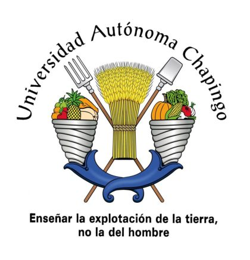
Antología de recorridos SOMEXA 2026
Monografías e información socioambiental y agroecológica de las localidades visitadas desde un enfoque de Sistemas Complejos Adaptativos en la Agroecología
Centro Académico Regional Huatusco (CAR), Universidad Autónoma Chapingo, Huatusco, Veracruz, México
Presentación
Por qué y cómo sistematizar tres recorridos de campo.
El sábado 14 de noviembre de 2026, el IV Congreso Mexicano de Agroecología salió del aula. Desde el Centro Académico Regional de la Universidad Autónoma Chapingo en Huatusco, Veracruz, tres recorridos de campo llevaron a congresistas, estudiantes y productores por un gradiente que va de los lomeríos cálidos de Puente Nacional, a menos de 500 m de altitud, a los huertos de la sierra de Chilchotla, a más de 2,600 m, en las faldas del Citlaltépetl. En un solo día y en un radio de cien kilómetros se cruzan el clima cálido subhúmedo, el templado húmedo del cafetal y el semifrío de montaña; la vid y la guanábana, el café y el chayote, el kiwi y el arándano; el queso jarocho, la tortilla de maíz criollo y las conservas de un huerto familiar.
Esta antología reúne y sistematiza lo que las tres guías de campo para celular ofrecieron durante el recorrido: la monografía de cada localidad visitada —su identidad, su medio físico, su clima, su sistema productivo y su biodiversidad—, y una lectura de cada sitio como sistema complejo adaptativo. No es la memoria de un día: es una base documental para volver a esos territorios, para compararlos y para formular nuevas preguntas de investigación y de acompañamiento técnico.
La obra tiene tres partes. La primera expone el marco con el que se leen los sitios: el agroecosistema como sistema complejo adaptativo y los diez elementos de la agroecología de la FAO. La segunda presenta el territorio y las tres rutas con sus trece monografías. La tercera ofrece una síntesis comparada y cierra con los anexos: los instructivos de uso de las tres aplicaciones y el directorio de las familias de aplicaciones que el lector puede consultar libremente.
Cómo se construyó
La información proviene de las guías de campo de las tres rutas, elaboradas por los autores para el congreso y archivadas en Zenodo con DOI, y se complementó con fuentes públicas citadas en cada caso. Cada valor conserva su origen:
- Ubicación y altitud. Coordenadas proporcionadas por los organizadores o por los propios productores; altitud del modelo digital de elevación SRTM de 30 m (Farr et al., 2007); trazos y tiempos de traslado de OpenStreetMap con OSRM, multiplicados por 1.35–1.5 para autobús en caminos de montaña.
- Clima. Normales climatológicas del Servicio Meteorológico Nacional (SMN) de la estación más cercana y representativa; cuando la estación no mide temperatura, o está a otra altitud, la temperatura se estima con el gradiente altitudinal y se indica. La fórmula climática sigue el sistema de Köppen modificado por García (2004).
- Identidad, sistema productivo y biodiversidad. Información de los productores y facilitadores, de los organizadores y de fuentes como el INEGI, enciclopedias municipales y literatura especializada; las especies se citan con nombre común y científico.
- Lectura agroecológica. Los elementos de la agroecología presentes en cada sitio (FAO, 2018) y la lectura como sistema complejo adaptativo son interpretaciones de los autores, propuestas para discutirse en campo; no son un diagnóstico cerrado.
Todas las figuras son originales: los mapas y perfiles se dibujaron con datos abiertos y las gráficas se generaron directamente de los datos de esta obra, de modo que pueden reproducirse con el código que acompaña a las guías.
Cómo leer cada monografía
Cada monografía sigue el mismo orden, para que los sitios puedan compararse entre sí:
- Ficha. Lugar, coordenadas, altitud, clima, hora de la visita y quién expone.
- Identidad del lugar. Toponimia, historia, cultura y datos que dan sentido a lo que se ve.
- Medio físico y clima. Paisaje, relieve, suelo y un climograma con las normales del SMN.
- El sistema productivo. Qué se produce, cómo y para quién.
- Lectura como sistema complejo adaptativo. Componentes, interacciones, retroalimentaciones, propiedades emergentes y umbrales, con una figura de la red del agroecosistema.
- Guía de observación y alternativas. Qué mirar en campo y qué caminos abre la sostenibilidad.
- Biodiversidad. Cultivos, árboles y fauna asociados.
Las tres rutas de un vistazo
Mojica-Zárate, H. T., Díaz-José, Ó., Alejo-Bello, S., Partida-Sedas, J. G., y Rojas-Reyes, J. O. (2026). Antología de recorridos SOMEXA 2026: monografías e información socioambiental y agroecológica de las localidades visitadas desde un enfoque de Sistemas Complejos Adaptativos en la Agroecología (1.ª ed.). Universidad Autónoma Chapingo. https://doi.org/10.5281/zenodo.23845759
El agroecosistema como sistema complejo adaptativo
Agentes, interacciones, retroalimentaciones y propiedades emergentes: la lente de esta antología.
Un agroecosistema no es una suma de cultivos: es una red de agentes —familias, plantas, animales, microorganismos del suelo, mercados, instituciones— que interactúan, aprenden y se reorganizan. De esas interacciones locales emerge un orden que nadie dirige por completo. Esa es la definición de un sistema complejo adaptativo (Holland, 1995; Levin, 1998), y es la lente con la que esta antología lee cada sitio.
Propiedades de un sistema complejo adaptativo
| Propiedad | Qué significa | Cómo se ve en campo |
|---|---|---|
| Agentes heterogéneos | El sistema está hecho de muchos componentes distintos que actúan con reglas propias. | La familia, la cooperativa, el técnico, el comprador; el café, el chalahuite, la abeja, el hongo del suelo. |
| Interacciones no lineales | Pequeños cambios pueden tener efectos grandes, y grandes esfuerzos, efectos pequeños. | Una helada tardía, una plaga nueva o una caída del precio que reorganiza toda la finca. |
| Retroalimentaciones | Los resultados regresan como causas: refuerzan (positivas) o amortiguan (negativas) un proceso. | Más sombra, más hojarasca, más materia orgánica, más agua en el suelo, mejor cafetal. |
| Emergencia | Propiedades del conjunto que no tiene ninguna parte por separado. | La calidad en taza, la fertilidad del suelo, la confianza que sostiene a una cooperativa. |
| Autoorganización | El orden surge de reglas locales sin un control central. | Los acuerdos de trabajo, el intercambio de semillas, las redes de venta directa. |
| Adaptación y memoria | Los agentes aprenden y cambian sus reglas; el sistema guarda la experiencia. | La selección de semilla criolla, el conocimiento campesino, los egresados que regresan a su tierra. |
| Escalas anidadas | Cada sistema contiene a otros y forma parte de uno mayor (panarquía). | Planta, parcela, finca, comunidad, cuenca, región: cada nivel tiene sus propios ritmos (Gunderson y Holling, 2002). |
| Resiliencia y umbrales | Capacidad de absorber perturbaciones sin perder la identidad; más allá de un umbral, el sistema cambia de régimen. | Un cafetal diverso que soporta la roya frente a un monocultivo que se pierde (Folke, 2006). |
Cómo se lee un sitio
Leer un sitio como sistema complejo adaptativo implica cuatro desplazamientos de la mirada. Primero, de los objetos a las relaciones: importa menos cuántos cultivos hay que qué hace cada uno por los demás. Segundo, de la foto a la película: el sistema se entiende por su trayectoria, por cómo llegó a ser lo que es y hacia dónde puede ir. Tercero, del promedio a la diversidad: la variación entre parcelas, familias y variedades no es ruido, es la materia prima de la adaptación. Cuarto, del experto al diálogo de saberes: el conocimiento campesino es memoria del sistema, y el investigador es un agente más dentro de él (García, 2006; Toledo y Barrera-Bassols, 2008).
Para cada sitio la antología propone cinco preguntas: ¿cuáles son sus componentes?, ¿qué interacciones los unen?, ¿qué retroalimentaciones sostienen o erosionan al sistema?, ¿qué propiedades emergentes lo distinguen?, y ¿qué umbrales o perturbaciones lo pondrían en riesgo, y con qué capacidad de adaptación cuenta para enfrentarlos? Las respuestas son hipótesis de trabajo para comprobar en el recorrido y con quienes viven en cada lugar.
Los diez elementos de la agroecología
Los diez elementos de la agroecología de la FAO (2018) son el segundo instrumento de lectura. No son una lista de requisitos: son dimensiones interdependientes que, juntas, describen la transición hacia sistemas alimentarios sostenibles. En cada monografía se señalan los elementos que el sitio expresa con más claridad; la síntesis final los compara entre los trece sitios.
Diversificar especies, variedades y actividades, de la parcela al paisaje, para producir y para protegerse.
Innovar a partir del diálogo entre el saber local y la ciencia, y compartir lo aprendido.
Diseñar interacciones que se potencian: sombra y cultivo, animal y suelo, flor y polinizador.
Producir más con menos recursos externos, aprovechando los procesos ecológicos del propio sistema.
Cerrar ciclos de nutrientes, agua y biomasa: que el residuo de un proceso sea insumo de otro.
Capacidad de las personas, las comunidades y los ecosistemas de recuperarse de perturbaciones.
Dignidad, equidad, inclusión y justicia, con atención al papel de las mujeres y los jóvenes.
Dietas sanas, diversas y culturalmente apropiadas que sostienen la identidad local.
Mecanismos justos y transparentes para decidir sobre la tierra, el agua y los recursos comunes.
Mercados de cercanía que reconectan a productores y consumidores y dejan el valor en el territorio.
Del Golfo a la montaña: un gradiente en cien kilómetros
Altitud, clima y vegetación de las Altas Montañas de Veracruz y la sierra de Puebla.
Huatusco se asienta a unos 1,340 m de altitud en la vertiente de barlovento de la Sierra Madre Oriental, en la región de las Altas Montañas de Veracruz. Desde ahí, el terreno cae hacia el Golfo de México por lomeríos y barrancas, y sube hacia el poniente hasta el Citlaltépetl o Pico de Orizaba (5,636 m), la montaña más alta del país. Los vientos húmedos del Golfo chocan con la sierra y dejan lluvia y neblina casi todo el año: de esa combinación de altitud y humedad nace la extraordinaria diversidad de climas, vegetación y sistemas productivos que recorren las tres rutas.
La Ruta 1 baja: del cafetal de Huatusco a los lomeríos cálidos de Puente Nacional y Comapa, entre 450 y 550 m, donde el clima es cálido subhúmedo con una temporada seca marcada y dominan los frutales, los potreros y la milpa. La Ruta 2 sube: de Huatusco a la sierra de Chichiquila, Chilchotla y Quimixtlán, en Puebla, hasta 2,640 m, donde el clima es templado y semifrío, el bosque de pino y encino cubre las cumbres y los huertos de frutillas sustituyen al café. La Ruta 3 se mantiene en la franja cafetalera, entre 1,050 y 1,530 m, de Huatusco a Ixhuatlán del Café y Fortín de las Flores: el café bajo sombra, el bosque de niebla, el chayote y los huertos de la montaña media.
Los climas de los trece sitios
La tabla resume la fórmula climática de cada sitio según Köppen modificado por García (2004), calculada con las normales del SMN de la estación más representativa. En la Ruta 1 se usó la estación El Carrizal (242 m) con la temperatura llevada a la altitud de cada sitio.
| Ruta | Sitio | Altitud (m) | Fórmula | Clima | T media (°C) | Lluvia (mm) |
|---|---|---|---|---|---|---|
| 1 | Mata de Zarza | 472 | Aw0(w)(i')g | Cálido subhúmedo, el más seco de los subhúmedos, con lluvias en verano | 24.2 | 876 |
| 1 | Hato de la Higuera | 455 | Aw0(w)(i')g | Cálido subhúmedo, el más seco de los subhúmedos, con lluvias en verano | 24.3 | 876 |
| 1 | El Coyol | 545 | Aw0(w)(i')g | Cálido subhúmedo, el más seco de los subhúmedos, con lluvias en verano | 23.7 | 876 |
| 1 | Paso Pimienta | 549 | Aw0(w)(i')g | Cálido subhúmedo, el más seco de los subhúmedos, con lluvias en verano | 23.7 | 876 |
| 2 | Kiwi · Elotepec | 1,840 | C(f)b(i')g | Templado húmedo con lluvias todo el año | 14.5 | 1,982 |
| 2 | Cascada · desayuno | 2,117 | C(w2)b(i')g | Templado subhúmedo, el más húmedo de los subhúmedos, con lluvias en verano | 13.4 | 1,459 |
| 2 | UIEP Chilchotla | 2,354 | C(w2)big | Templado subhúmedo, el más húmedo de los subhúmedos, con lluvias en verano | 12.5 | 1,459 |
| 2 | Ranchito Azul | 2,627 | C(E)(w2)big | Semifrío subhúmedo, el más húmedo de los subhúmedos, con lluvias en verano | 11.4 | 1,624 |
| 2 | Un Mundo Raro | 2,636 | C(E)(w2)big | Semifrío subhúmedo, el más húmedo de los subhúmedos, con lluvias en verano | 11.3 | 942 |
| 3 | Las Cañadas | 1,342 | C(w2)b(i') | Templado subhúmedo, el más húmedo de los subhúmedos, con lluvias en verano | 17.1 | 2,005 |
| 3 | Banco de chayote | 1,341 | C(w2)b(i') | Templado subhúmedo, el más húmedo de los subhúmedos, con lluvias en verano | 17.1 | 2,005 |
| 3 | Rancho Contla | 1,359 | (A)C(f)a(i')g | Semicálido del grupo de los templados húmedo con lluvias todo el año | 20.2 | 1,903 |
| 3 | Hortín Fortín | 1,060 | (A)C(f)a(i')g | Semicálido del grupo de los templados húmedo con lluvias todo el año | 20.9 | 1,918 |
Zonas tropicales de agricultura agroecológica
De la montaña cafetalera de Huatusco a los lomeríos cálidos de Puente Nacional y Comapa, Veracruz: vid en el trópico, pulpa de guanábana, queso jarocho y maíz criollo con tortilla.
La primera ruta desciende unos 850 m en poco más de una hora: deja atrás el cafetal y la caña de Huatusco y Totutla, cruza la barranca de Acazónica y llega a los lomeríos cálidos de Puente Nacional y Comapa. Ahí, donde la selva baja caducifolia convive con potreros y huertos, cuatro experiencias campesinas muestran cómo se produce y, sobre todo, cómo se transforma lo que se produce: la vid adaptada al trópico, la pulpa de guanábana, el queso tradicional jarocho y la tortilla de maíz criollo.
El hilo conductor de la ruta es el valor agregado local: en tres de los cuatro sitios la cosecha no sale como materia prima, sino transformada por las propias familias. La pregunta de fondo es cuánto de ese valor se queda en la comunidad y qué costo ambiental tiene cada transformación.
Guía de campo para celular: https://hectortecumshe-ai.github.io/recorridos-somexa/2026-ruta-1/
DOI: 10.5281/zenodo.23787066 · versión 1.1.3
Facilitador del recorrido: Dr. Héctor Tecumshé Mojica Zárate
Escanea el código para abrir la guía; el instructivo de uso está en el Anexo A.
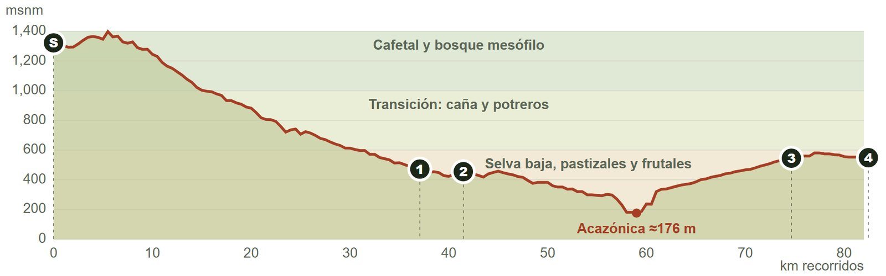
Itinerario
| Hora | Sitio | Lugar | Altitud |
|---|---|---|---|
| 08:25–10:15 | 1. Mata de Zarza | Puente Nacional, Veracruz | 472 m |
| 10:30–11:50 | 2. Hato de la Higuera | Puente Nacional, Veracruz | 455 m |
| 12:50–14:20 | 3. El Coyol | Comapa, Veracruz | 545 m |
| 14:40–17:15 | 4. Paso Pimienta | Comapa, Veracruz | 549 m |
1Mata de Zarza
Cultivo de la vid y otras experiencias con productores de Mata de Zarza.
Puente Nacional, Veracruz
19°13′46.0″ N · 96°40′29.0″ O
472 m
Aw0(w)(i')g · Cálido subhúmedo, el más seco de los subhúmedos, con lluvias en verano
08:25–10:15 · sábado 14 de noviembre de 2026
Productores y facilitadores del recorrido
Medio físico y clima
- Paisaje
- Tras bajar unos 850 m desde Huatusco por Totutla, el cafetal y la caña dan paso a lomeríos cálidos con frutales, potreros y selva baja.
- Vegetación
- Viñedos, huertos frutales y potreros, con selva baja caducifolia alrededor.
- Suelo
- Suelos arcillosos de lomerío, someros en laderas con afloramientos de roca.
Cálido subhúmedo, el más seco de los subhúmedos, con lluvias en verano. Temperatura media anual estimada de 24.2 °C; el mes más fresco es enero (20.3 °C) y el más cálido mayo (27.2 °C). Llueven 876 mm al año; los meses secos van de enero a diciembre.
El sistema productivo
Vid cultivada en clima cálido subhúmedo, junto con frutales y otras experiencias de los productores.
Lectura como sistema complejo adaptativo
6 cultivos o crianzas, 6 especies arbóreas o de vegetación, 8 especies de fauna y las familias, los técnicos y los mercados.
El ingreso de la uva sostiene la inversión en el viñedo; las lluvias de verano favorecen hongos que obligan a aplicar fungicidas, cuyo costo y efecto en el suelo pueden erosionar ese mismo ingreso.
Un viñedo tropical es en sí una novedad: el conocimiento de cómo manejar la vid en clima cálido surge de la experimentación compartida entre productores.
Sin invierno frío, la vid no descansa: el ciclo se controla con podas y su respuesta depende del calor y de la sequía. La diversidad de frutales y de experiencias es la reserva de adaptación del sistema.
¿Cómo se adapta un cultivo de clima templado como la vid al trópico cálido, y qué costos ambientales y económicos tiene su manejo?
Qué observar
- Variedades y portainjertos que usan, y de dónde los obtuvieron.
- Manejo de enfermedades por hongos (mildiu y oídio) en lluvias, y qué productos aplican.
- Uso del agua y riego en la temporada seca.
- Manejo del suelo entre hileras: desnudo, con hierbas o con cobertura.
- Destino de la uva: fruta fresca, jugo, vino o pasa, y a qué precio.
- Trabajo familiar y organización entre productores.
Alternativas desde la sostenibilidad
- Coberturas vivas de leguminosas entre hileras para proteger y nutrir el suelo.
- Caldos minerales (bordelés, sulfocálcico) y biopreparados en lugar de fungicidas de síntesis.
- Cercos vivos y franjas de flores que atraigan enemigos naturales de las plagas.
- Captación de agua de lluvia y riego por goteo.
- Transformación local (jugo, vino artesanal, vinagre, pasas) y turismo rural.
Biodiversidad
- Vid
- Mango
- Guanábana
- Maíz
- Frijol
- Caña de azúcar
- Palo mulato (Bursera simaruba)
- Cocuite (Gliricidia sepium)
- Guácimo (Guazuma ulmifolia)
- Huizache (Vachellia farnesiana)
- Jobo (Spondias mombin)
- Ceiba (Ceiba pentandra)
- Chachalaca (Ortalis vetula)
- Urraca copetona (Calocitta formosa)
- Zanate (Quiscalus mexicanus)
- Iguana verde (Iguana iguana)
- Garrobo (Ctenosaura sp.)
- Tlacuache (Didelphis sp.)
- Armadillo (Dasypus novemcinctus)
- Aves frugívoras que consumen la uva madura
2Hato de la Higuera
Planta procesadora de pulpa de guanábana y de otras frutas.
Puente Nacional, Veracruz
19°14′36.0″ N · 96°40′10.0″ O
455 m
Aw0(w)(i')g · Cálido subhúmedo, el más seco de los subhúmedos, con lluvias en verano
10:30–11:50 · sábado 14 de noviembre de 2026
Productores y facilitadores del recorrido
Medio físico y clima
- Paisaje
- A menos de 2 km de Mata de Zarza: el mismo paisaje de lomeríos cálidos con frutales.
- Vegetación
- Huertos de guanábana, mango y otros frutales, con selva baja caducifolia en laderas.
- Suelo
- Suelos arcillosos de lomerío, someros en laderas con afloramientos de roca.
Cálido subhúmedo, el más seco de los subhúmedos, con lluvias en verano. Temperatura media anual estimada de 24.3 °C; el mes más fresco es enero (20.4 °C) y el más cálido mayo (27.3 °C). Llueven 876 mm al año; los meses secos van de enero a diciembre.
El sistema productivo
Huertos de guanábana y otros frutales con transformación local en una planta de pulpa.
Lectura como sistema complejo adaptativo
4 cultivos o crianzas, 5 especies arbóreas o de vegetación, 9 especies de fauna y las familias, los técnicos y los mercados.
La planta de pulpa crea demanda para la fruta de los huertos vecinos, y esa demanda estimula sembrar y cuidar más árboles: un ciclo que refuerza la economía local mientras haya agua y energía para procesar y congelar.
El valor agregado y el empleo local emergen de la cadena huerto–planta–mercado; ninguna parte lo genera sola.
El sistema depende de polinizadores (escarabajos nitidúlidos), de la refrigeración y de un mercado externo. El compostaje de cáscaras y la energía solar reducirían esa dependencia.
¿Cuánto del valor de la fruta se queda en la comunidad, y cómo maneja la planta sus residuos, el agua y la energía?
Qué observar
- Origen de la fruta (huertos propios o compra a vecinos) y precio que se paga al productor.
- Polinización y amarre del fruto de la guanábana.
- Plagas del fruto (barrenador Cerconota anonella, perforador de semilla Bephratelloides) y su control.
- Consumo de agua y de energía para refrigerar y congelar la pulpa.
- Destino de cáscaras, semillas y fruta de desecho.
- Organización (familiar o cooperativa) y mercados de la pulpa.
Alternativas desde la sostenibilidad
- Compostaje de cáscaras y desechos para regresarlos a los huertos.
- Energía solar para la refrigeración.
- Polinización manual y conservación de los escarabajos polinizadores.
- Embolsado del fruto para protegerlo de los barrenadores.
- Certificación participativa y venta en mercados locales y regionales.
Biodiversidad
- Guanábana
- Mango
- Otros frutales tropicales
- Maíz
- Palo mulato (Bursera simaruba)
- Cocuite (Gliricidia sepium)
- Guácimo (Guazuma ulmifolia)
- Cornezuelo (Vachellia cornigera)
- Jobo (Spondias mombin)
- Chachalaca (Ortalis vetula)
- Urraca copetona (Calocitta formosa)
- Zanate (Quiscalus mexicanus)
- Iguana verde (Iguana iguana)
- Garrobo (Ctenosaura sp.)
- Tlacuache (Didelphis sp.)
- Armadillo (Dasypus novemcinctus)
- Escarabajos polinizadores de la guanábana (Nitidulidae)
- Abejas nativas sin aguijón
3El Coyol
Comunidad ganadera: elaboración artesanal del queso tradicional jarocho.
Comapa, Veracruz
19°10′17.0″ N · 96°41′53.7″ O
545 m
Aw0(w)(i')g · Cálido subhúmedo, el más seco de los subhúmedos, con lluvias en verano
12:50–14:20 · sábado 14 de noviembre de 2026
Productores y facilitadores del recorrido
Medio físico y clima
- Paisaje
- Después de cruzar la barranca de Acazónica (cerca de 170 m) se sube a los lomeríos ganaderos de Comapa: dominan los potreros.
- Vegetación
- Pastizales para ganado (estrella, guinea), cercas vivas y árboles dispersos como guácimo y cocuite.
- Suelo
- Vertisoles arcillosos que se agrietan en la temporada seca.
Cálido subhúmedo, el más seco de los subhúmedos, con lluvias en verano. Temperatura media anual estimada de 23.7 °C; el mes más fresco es enero (19.8 °C) y el más cálido mayo (26.7 °C). Llueven 876 mm al año; los meses secos van de enero a diciembre.
El sistema productivo
Ganadería bovina de doble propósito en pastoreo, con transformación artesanal de la leche en queso.
Lectura como sistema complejo adaptativo
3 cultivos o crianzas, 5 especies arbóreas o de vegetación, 7 especies de fauna y las familias, los técnicos y los mercados.
El pasto alimenta al ganado, la leche se hace queso y el suero puede volver a alimentar cerdos y aves; si la carga animal rebasa lo que el potrero produce, el suelo se compacta y el pasto disminuye: una retroalimentación que erosiona.
El queso tradicional jarocho es una propiedad cultural emergente: resulta del clima, del pasto, de la raza del ganado y de un saber transmitido entre generaciones.
La sequía de primavera, la garrapata y la degradación del potrero son los umbrales; el silvopastoreo con guácimo, cocuite y leucaena es la ruta de adaptación más clara.
¿Puede la ganadería de doble propósito sostener el queso tradicional sin degradar los potreros, y qué se hace con el suero?
Qué observar
- Carga animal y estado de los potreros: cobertura, erosión y malezas.
- Árboles en potreros y cercas vivas: sombra y forraje para el ganado.
- Sanidad del hato (garrapata, mastitis) y uso de desparasitantes y acaricidas.
- Higiene en el ordeño y en la elaboración del queso; leche cruda o pasteurizada.
- Destino del suero que queda del queso.
- Precio del queso y canales de venta.
Alternativas desde la sostenibilidad
- Silvopastoreo con leucaena, cocuite y guácimo.
- Pastoreo rotacional y ajuste de la carga animal.
- Suplementación mineral y control integrado de la garrapata (rotación, hongos entomopatógenos).
- Uso del suero para alimentar cerdos y aves, o para elaborar requesón.
- Biodigestor con excretas y una marca colectiva para el queso jarocho.
Biodiversidad
- Pastos (estrella africana, guinea)
- Maíz
- Leucaena y otras forrajeras
- Guácimo (Guazuma ulmifolia)
- Cocuite (Gliricidia sepium)
- Palo mulato (Bursera simaruba)
- Huizache (Vachellia farnesiana)
- Cornezuelo (Vachellia cornigera)
- Garza ganadera (Bubulcus ibis)
- Zopilote (Coragyps atratus)
- Zanate (Quiscalus mexicanus)
- Murciélago vampiro (Desmodus rotundus), transmisor de la rabia paralítica
- Coyote (Canis latrans)
- Tlacuache (Didelphis sp.)
- Armadillo (Dasypus novemcinctus)
4Paso Pimienta
Integración de la producción de maíz criollo, nixtamalización y venta de tortillas. Comida y cierre del recorrido.
Comapa, Veracruz
19°07′29.1″ N · 96°42′00.7″ O
549 m
Aw0(w)(i')g · Cálido subhúmedo, el más seco de los subhúmedos, con lluvias en verano
14:40–17:15 · sábado 14 de noviembre de 2026
Productores y facilitadores del recorrido
Medio físico y clima
- Paisaje
- Misma altitud que El Coyol; junto a los potreros aparecen milpas y parcelas de maíz criollo.
- Vegetación
- Milpa con maíz criollo, potreros, cercas vivas (cocuite, palo mulato) y relictos de selva mediana subcaducifolia.
- Suelo
- Suelos arcillosos de lomerío, de rojizos a oscuros (luvisoles y vertisoles).
Cálido subhúmedo, el más seco de los subhúmedos, con lluvias en verano. Temperatura media anual estimada de 23.7 °C; el mes más fresco es enero (19.8 °C) y el más cálido mayo (26.7 °C). Llueven 876 mm al año; los meses secos van de enero a diciembre.
El sistema productivo
Milpa con maíces criollos, nixtamalización familiar y venta directa de tortillas.
Lectura como sistema complejo adaptativo
4 cultivos o crianzas, 5 especies arbóreas o de vegetación, 7 especies de fauna y las familias, los técnicos y los mercados.
Sembrar maíz criollo para hacer tortilla mantiene viva la semilla, y la venta de tortilla financia la siembra del año siguiente: conservar y vender se refuerzan mutuamente.
La diversidad de maíces criollos es memoria del sistema: cada color y ciclo es una respuesta acumulada a lluvias, plagas y gustos.
La competencia de la tortilla industrial y el costo de la leña son umbrales económicos; el manejo del nejayote, uno ambiental. Los bancos comunitarios de semilla aumentan la capacidad de adaptación.
¿Cómo se sostiene la conservación de los maíces criollos cuando la tortilla se vende, y qué pasa con el nejayote y la leña del nixtamal?
Qué observar
- Variedades de maíz criollo (colores, ciclos) y cómo se selecciona y guarda la semilla.
- Cultivos asociados en la milpa y fertilidad del suelo.
- Plagas del cultivo y del grano almacenado (gusano cogollero, gorgojo) y su control.
- Proceso de nixtamalización (cal, tiempos, molino) y manejo del nejayote.
- Combustible usado (leña o gas) y de dónde proviene.
- Quién produce y vende, y precio frente a la tortilla industrial.
Alternativas desde la sostenibilidad
- Banco comunitario de semillas y ferias de intercambio de maíces criollos.
- Milpa intercalada con frutales y abonos verdes (mucuna, canavalia).
- Tratamiento del nejayote (sedimentación, uso diluido) en lugar de verterlo al suelo o arroyos.
- Estufas ahorradoras de leña.
- Distintivo de «tortilla de maíz criollo» con precio justo.
Biodiversidad
- Maíz criollo
- Frijol
- Calabaza
- Chile
- Cocuite (Gliricidia sepium)
- Palo mulato (Bursera simaruba)
- Guácimo (Guazuma ulmifolia)
- Jobo (Spondias mombin)
- Ceiba (Ceiba pentandra)
- Tordos y zanates, que consumen la semilla recién sembrada
- Chachalaca (Ortalis vetula)
- Iguana verde (Iguana iguana)
- Tlacuache (Didelphis sp.)
- Ardilla (Sciurus aureogaster)
- Gusano cogollero (Spodoptera frugiperda)
- Gorgojo del maíz (Sitophilus zeamais)
Ruta de Altura
De la montaña cafetalera de Huatusco a la sierra de Chichiquila, Quimixtlán y Chilchotla, en Puebla: kiwi, arándanos y frutillas, huertos agroecológicos, bosque y agua de la cuenca alta del río La Antigua.
La Ruta de Altura asciende casi 1,300 m: del cafetal de Huatusco al huerto de kiwi de Elotepec, a la cascada de Chilchotla entre pinos y encinos, a la Universidad Interserrana del Estado de Puebla y a dos huertos agroecológicos de la sierra, Ranchito Azul y Un Mundo Raro, ya por encima de los 2,600 m, en las faldas del Citlaltépetl.
El hilo conductor es la diversificación en la montaña: frutales nuevos (kiwi, arándano, frambuesa) que llegan a territorios de maíz, haba y papa, y la pregunta de si pueden ampliar las opciones de las familias sin repetir la historia del monocultivo. La ruta toca también la parte alta de la cuenca del río La Antigua, cuya agua llega a Huatusco y a Puente Nacional: un recordatorio de que las rutas 1 y 2 están conectadas por el mismo río.
Guía de campo para celular: https://hectortecumshe-ai.github.io/recorridos-somexa/2026-ruta-2/
DOI: 10.5281/zenodo.23787064 · versión 1.0.3
Facilitador del recorrido: Óscar Díaz José · Itinerario: Dr. José Gervasio Partida Sedas
Escanea el código para abrir la guía; el instructivo de uso está en el Anexo B.
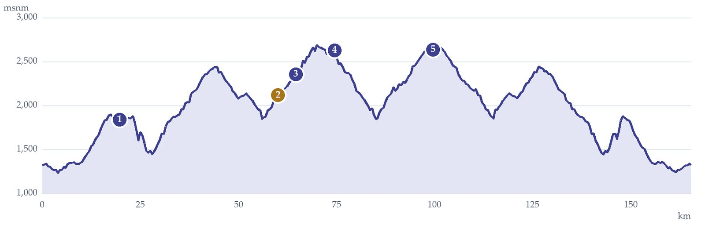
Itinerario
| Hora | Sitio | Lugar | Altitud |
|---|---|---|---|
| 07:30–09:00 | 1. Huerto de kiwi de Elotepec | Rancho Nuevo, Chichiquila, Puebla | 1,840 m |
| 10:00–10:50 | 2. Cascada de Chilchotla: desayuno | La Cascada, Teteltitla, Chilchotla, Puebla | 2,117 m |
| 11:00–11:50 | 3. Universidad Interserrana del Estado de Puebla | Chilchotla, Puebla | 2,354 m |
| 12:25–13:50 | 4. Huerto agroecológico Ranchito Azul: arándanos y frutillas | Alta Luz, Quimixtlán, Puebla | 2,627 m |
| 14:35–16:40 | 5. Huerto agroecológico Un Mundo Raro y comida típica | Acocomotla, Chilchotla, Puebla | 2,636 m |
1Huerto de kiwi de Elotepec
Recorrido por el huerto de kiwi con su investigador y productor.
Rancho Nuevo, Chichiquila, Puebla
19°10′42.0″ N · 97°03′15.0″ O
1,840 m
C(f)b(i')g · Templado húmedo con lluvias todo el año
07:30–09:00 · sábado 14 de noviembre de 2026
Dr. Juan Guillermo Cruz Castillo (Universidad Autónoma Chapingo)
Identidad del lugar
- Elotepec, en náhuatl, se interpreta como «cerro de los elotes»: el maíz está en el nombre del lugar, y el Cerro de Elotepec es uno de los referentes de Huatusco.
- Chichiquila significa «lugar donde abunda la hierba amarga» (chichic, amargo; quilitl, quelite): pregunta qué quelites se recolectan y se comen hoy. Su parroquia es la de San Mateo, cuya fiesta es el 21 de septiembre.
- La región fue habitada por pueblos nahuas antes de la llegada de los españoles; muchos nombres de lugares, plantas y comidas conservan esa raíz.
Medio físico y clima
- Paisaje
- El autobús sube de los cafetales de Huatusco (1,340 m) a 1,840 m. Arriba de 1,600 m el café pierde vigor y aparecen el maíz, el frijol, los frutales de clima templado y los relictos de bosque mesófilo con neblina.
- Relieve
- Ladera de barlovento de la Sierra Madre Oriental, en las faldas del Citlaltépetl; barrancas profundas y lomas volcánicas.
- Suelo
- Andosoles de ceniza volcánica: profundos, oscuros, porosos, ricos en materia orgánica y algo ácidos.
Templado húmedo con lluvias todo el año. La temperatura media anual es de 14.5 °C: el mes más fresco es enero (11.4 °C) y el más cálido mayo (16.7 °C). Llueven 1,982 mm al año, 82 % de ellos entre mayo y octubre; ningún mes es seco: la neblina y las lloviznas de invierno mantienen la humedad. Las madrugadas de invierno son frías (mínima media de 5.8 °C) y puede helar algunos días.
El sistema productivo
Kiwi (Actinidia chinensis var. deliciosa) en espaldera o pérgola: una enredadera leñosa de origen chino que aquí se cultiva en la zona alta tropical, donde el frío invernal es escaso.
- El kiwi es dioico: hay plantas macho, que dan polen, y plantas hembra, que dan fruto. La polinización (abejas o a mano) decide el tamaño y el número de semillas del fruto.
- En Veracruz se ha estudiado una población seleccionada, «Tropical Highland», con bajo requerimiento de frío invernal, producida en la zona alta tropical. Comparada con Hayward tiene frutos más chicos pero más dulces (°Brix) y ácidos, y más flavonoides.
- Un estudio de zonificación ubicó a Huatusco y Chumatlán como los municipios de Veracruz con mayor similitud de suelo y clima para el kiwi; cerca de 29 % del estado tendría condiciones para introducirlo.
19° 10′ 42″ N, 97° 03′ 15″ O
Lectura como sistema complejo adaptativo
6 cultivos o crianzas, 5 especies arbóreas o de vegetación, 6 especies de fauna y las familias, los técnicos y los mercados.
Si el kiwi da buenos precios, se dedica más tierra y trabajo al huerto; si esa tierra sale de la milpa o del bosque, la familia pierde autoabasto y el paisaje pierde diversidad: la retroalimentación puede ser virtuosa o erosiva.
La viabilidad de un frutal nuevo en la montaña tropical emerge de la colaboración entre el investigador y el productor.
El frío invernal escaso, las heladas fuera de temporada y la falta de mercado son los umbrales; la diversificación con maíz, café y frutales criollos es el seguro del sistema.
¿Puede un frutal nuevo como el kiwi diversificar la economía de las familias de la montaña sin desplazar al maíz, al café y al bosque?
Qué observar
- Proporción de plantas macho y hembra y cómo se reparten en el huerto.
- Tipo de soporte (espaldera, pérgola) y poda de formación y de fructificación.
- Cómo se logra la brotación con poco frío invernal.
- Polinizadores que visitan las flores y si se poliniza a mano.
- Manejo del suelo: coberturas, abonos orgánicos y drenaje en ladera.
- Plagas, enfermedades y daños por viento, granizo o helada.
- Cosecha, maduración, precio y a quién se vende el kiwi.
Alternativas desde la sostenibilidad
- Cortinas rompeviento con especies nativas (aile, liquidámbar) que además dan refugio a la fauna.
- Coberturas vivas y abonos verdes entre hileras para proteger el suelo de ladera.
- Conservación de abejas nativas y flores en los bordes para asegurar la polinización.
- Viveros locales con la selección adaptada y capacitación de campesino a campesino.
- Transformación: mermeladas, deshidratados, vinagre de fruta.
Preguntas para el productor
- ¿Cómo llegó el kiwi a esta comunidad y quién lo trajo?
- ¿Qué le ha costado más aprender del cultivo?
- ¿Qué cambia en la familia y en la comunidad con un cultivo nuevo?
Biodiversidad
- Kiwi
- Maíz criollo
- Frijol
- Café en las partes bajas
- Chayote
- Aguacate criollo
- Aile (Alnus acuminata)
- Liquidámbar (Liquidambar styraciflua)
- Encinos (Quercus spp.)
- Helechos arborescentes
- Jinicuil y chalahuite (Inga spp.)
- Tucaneta verde (Aulacorhynchus prasinus)
- Chachalaca (Ortalis vetula)
- Colibríes
- Ardilla gris (Sciurus aureogaster)
- Tlacuache (Didelphis sp.)
- Abejas nativas sin aguijón
2Cascada de Chilchotla: desayuno
Desayuno junto a la cascada, entre bosque de pino y encino; hay un puente colgante y una poza.
La Cascada, Teteltitla, Chilchotla, Puebla
19°15′08.3″ N · 97°10′26.0″ O
2,117 m
C(w2)b(i')g · Templado subhúmedo, el más húmedo de los subhúmedos, con lluvias en verano
10:00–10:50 · sábado 14 de noviembre de 2026
Productores y facilitadores del recorrido
Identidad del lugar
- Chilchotla se interpreta como «donde abunda el jilote» (mazorca tierna) o como «lugar de chiles»; antiguamente se llamó Chilchihualpancingo. Su parroquia está dedicada a San Pedro.
- En el municipio nacen o corren el Huitzilapan, afluente principal del río La Antigua, y los arroyos Nexhuacán, Colotlanago, Acocomotla y Paredones.
- Entre la comida del lugar destacan la trucha y el mole; se elabora un licor de fruta llamado «guinda».
Medio físico y clima
- Paisaje
- Se cruza la sierra de Chichiquila y Quimixtlán hasta más de 2,000 m: barrancas con bosque, milpas en ladera y caseríos con humo de leña.
- Relieve
- Barranca labrada por los arroyos que forman el río La Antigua, en la sierra de Quimixtlán, de origen volcánico.
- Suelo
- Andosoles de bosque, con mantillo grueso de hojas y acículas.
Templado subhúmedo, el más húmedo de los subhúmedos, con lluvias en verano. La temperatura media anual es de 13.4 °C: el mes más fresco es enero (10.5 °C) y el más cálido mayo (15.6 °C). Llueven 1,459 mm al año, 82 % de ellos entre mayo y octubre; ningún mes es seco: la neblina y las lloviznas de invierno mantienen la humedad. Las madrugadas de invierno son frías (mínima media de 4.9 °C) y puede helar algunos días.
El sistema productivo
Bosque de pino y encino con aprovechamiento turístico comunitario y criaderos de trucha y mojarra.
Lectura como sistema complejo adaptativo
2 cultivos o crianzas, 5 especies arbóreas o de vegetación, 6 especies de fauna y las familias, los técnicos y los mercados.
Un bosque conservado atrae visitantes, y el ingreso del turismo comunitario motiva a conservarlo: una retroalimentación positiva que depende de reglas claras de uso.
El agua limpia y constante es un servicio ecosistémico emergente del bosque de la parte alta de la cuenca.
La tala, el cambio de uso del suelo y la contaminación de los criaderos son umbrales. La gobernanza comunitaria del agua es la principal capacidad de adaptación.
El agua que cae aquí baja hasta Huatusco y Puente Nacional: ¿quién cuida la parte alta de la cuenca y quién se beneficia río abajo?
Qué observar
- Estado del bosque alrededor de la cascada: tala, regeneración, incendios.
- Origen del agua de los criaderos de trucha y a dónde va el agua que sale de ellos.
- Manejo de la basura y de los visitantes.
- Quién organiza el lugar: ejido, cooperativa, familia o municipio.
Alternativas desde la sostenibilidad
- Pago por servicios ambientales y acuerdos río arriba–río abajo.
- Humedales artificiales para limpiar el agua que sale de los estanques de trucha.
- Senderos interpretativos con guías jóvenes de la comunidad.
Biodiversidad
- Trucha arcoíris (acuacultura)
- Mojarra
- Pinos (Pinus spp.)
- Encinos (Quercus spp.)
- Oyamel (Abies religiosa)
- Madroño (Arbutus xalapensis)
- Musgos y bromelias
- Trucha arcoíris (Oncorhynchus mykiss), introducida
- Mirlo y zorzales
- Pájaros carpinteros
- Ardilla
- Mapache (Procyon lotor)
- Coyote (Canis latrans)
3Universidad Interserrana del Estado de Puebla
Visita a la universidad pública de la sierra: formación de jóvenes de la región y su vínculo con las comunidades.
Chilchotla, Puebla
19°14′33.0″ N · 97°12′03.0″ O
2,354 m
C(w2)big · Templado subhúmedo, el más húmedo de los subhúmedos, con lluvias en verano
11:00–11:50 · sábado 14 de noviembre de 2026
Productores y facilitadores del recorrido
Identidad del lugar
- En Chilchotla, un estudio del Colegio de Postgraduados encontró que el aguacate criollo es parte importante del traspatio: los productores reconocen seis tipos locales, además del Hass introducido. Pregunta por sus nombres y usos (fruto, hoja para tamales y mole, sombra, leña).
- Las fiestas de Todos Santos (1 y 2 de noviembre) acaban de pasar: es buen momento para preguntar qué se pone en la ofrenda y qué se cosecha para ella.
- Chilchotla tiene 31 localidades y unos 21,000 habitantes; su cabecera es Rafael J. García.
Medio físico y clima
- Paisaje
- Lomas altas con milpa, papa, haba, avena y frutales de traspatio; casas con huerto familiar y animales.
- Relieve
- Parte occidental de la sierra de Quimixtlán, cubierta de materiales volcánicos.
- Suelo
- Andosoles: suelos jóvenes de ceniza volcánica, muy porosos, que retienen agua pero fijan fósforo.
Templado subhúmedo, el más húmedo de los subhúmedos, con lluvias en verano. La temperatura media anual es de 12.5 °C: el mes más fresco es enero (9.7 °C) y el más cálido mayo (14.6 °C). Llueven 1,459 mm al año, 82 % de ellos entre mayo y octubre; ningún mes es seco: la neblina y las lloviznas de invierno mantienen la humedad. Las madrugadas de invierno son frías (mínima media de 4.1 °C) y puede helar algunos días.
El sistema productivo
Agricultura campesina de montaña: milpa, frutales de traspatio, aguacate criollo y animales de corral.
19° 14′ 33″ N, 97° 12′ 03″ O
Lectura como sistema complejo adaptativo
6 cultivos o crianzas, 4 especies arbóreas o de vegetación, 5 especies de fauna y las familias, los técnicos y los mercados.
Formar jóvenes de la sierra en su propio territorio fortalece a las comunidades, y comunidades más fuertes retienen a sus jóvenes: una retroalimentación que contrarresta la migración.
La universidad funciona como nodo de conocimiento: conecta saberes campesinos, investigación y política pública.
La falta de oportunidades locales empuja a migrar; la creación conjunta de conocimientos y los proyectos con las comunidades son la vía de adaptación.
¿Qué necesita una universidad de la sierra para que sus jóvenes encuentren futuro en su propio territorio?
Qué observar
- Carreras y proyectos ligados al campo y a la comunidad.
- Parcelas, huertos o módulos demostrativos.
- Lenguas que se hablan entre los estudiantes.
- Vínculos con productores, ejidos y municipios.
Alternativas desde la sostenibilidad
- Escuelas de campo campesino a campesino con estudiantes como facilitadores.
- Bancos de semillas y colecciones vivas de aguacate criollo y frutales locales.
- Investigación participativa con las familias de la sierra.
Biodiversidad
- Maíz criollo
- Haba
- Papa
- Avena forrajera
- Aguacate criollo
- Durazno y ciruela de traspatio
- Pinos y encinos
- Aile (Alnus acuminata)
- Capulín (Prunus serotina)
- Tejocote (Crataegus mexicana)
- Gallinas y guajolotes de traspatio
- Borregos
- Zopilote (Coragyps atratus)
- Gavilanes
- Tuzas (plaga de la milpa)
4Huerto agroecológico Ranchito Azul: arándanos y frutillas
Recorrido por el huerto agroecológico de arándanos y frutillas (zarzamora, frambuesa, fresa).
Alta Luz, Quimixtlán, Puebla
19°12′50.0″ N · 97°10′12.0″ O
2,627 m
C(E)(w2)big · Semifrío subhúmedo, el más húmedo de los subhúmedos, con lluvias en verano
12:25–13:50 · sábado 14 de noviembre de 2026
Productores y facilitadores del recorrido
Identidad del lugar
- Quimixtlán se interpreta, del náhuatl quimilli (envoltorio), mixtli (nube) y tlan (lugar), como «lugar envuelto en nubes»: así se ve la sierra muchas mañanas. Su parroquia es la de San Juan Bautista.
- Puebla es el primer productor nacional de arándano azul orgánico; la mayor parte se cultiva en Zacatlán y en la zona del Popocatépetl, por eso un huerto en esta sierra es una experiencia poco común.
- Fue un asentamiento prehispánico con influencia nahua, y es municipio libre desde 1895.
Medio físico y clima
- Paisaje
- Lomas altas entre la neblina, con parcelas pequeñas, bosque en las cumbres y vistas a las barrancas que bajan al Golfo.
- Relieve
- Sierra de Quimixtlán: lomas y laderas volcánicas entre 2,000 y 2,600 m.
- Suelo
- Andosoles ácidos: el arándano necesita suelos ácidos (pH de 4.5 a 5.5), sueltos y con mucha materia orgánica, como los de esta sierra.
Semifrío subhúmedo, el más húmedo de los subhúmedos, con lluvias en verano. La temperatura media anual es de 11.4 °C: el mes más fresco es enero (8.8 °C) y el más cálido mayo (13.4 °C). Llueven 1,624 mm al año, 85 % de ellos entre mayo y octubre; ningún mes es seco: la neblina y las lloviznas de invierno mantienen la humedad. Las madrugadas de invierno son frías (mínima media de 3.3 °C) y puede helar algunos días.
El sistema productivo
Arándano azul (Vaccinium corymbosum y sus híbridos) y otras frutillas con manejo agroecológico: acolchados, abonos orgánicos y control biológico.
19° 12′ 50″ N, 97° 10′ 12″ O · 2,320 m
Lectura como sistema complejo adaptativo
6 cultivos o crianzas, 4 especies arbóreas o de vegetación, 5 especies de fauna y las familias, los técnicos y los mercados.
Los acolchados y los abonos orgánicos alimentan la vida del suelo, que a su vez mejora la nutrición de las plantas y reduce la necesidad de insumos: un ciclo que se refuerza con el tiempo.
Un huerto de frutillas con manejo agroecológico en clima semifrío es una combinación nueva para la región.
El precio de exportación puede empujar hacia el monocultivo y la dependencia de insumos; las heladas y el suelo ácido son umbrales biofísicos. La diversidad de frutillas y cultivos es la defensa.
El arándano se exporta y se paga bien: ¿cómo evitar que una fruta de exportación vuelva a la sierra un monocultivo dependiente de insumos?
Qué observar
- Variedades de arándano y su requerimiento de frío.
- Acolchado (acícula de pino, aserrín, corteza) y cómo se mantiene ácido el suelo.
- Riego, fertilización orgánica y biopreparados.
- Polinización: abejorros (Bombus), abejas nativas o colmenas.
- Protección contra aves, granizo y helada (mallas, cubiertas).
- Cosecha manual, empaque, mercado y precio.
Alternativas desde la sostenibilidad
- Asociar frutillas con flores y plantas aromáticas que atraen polinizadores y enemigos naturales.
- Compostas con residuos del bosque y del huerto en lugar de fertilizantes de síntesis.
- Certificación orgánica o participativa y venta directa en mercados regionales.
- Transformación local: mermeladas, licores, deshidratados.
Biodiversidad
- Arándano azul
- Zarzamora
- Frambuesa
- Fresa
- Maíz
- Haba
- Pinos y encinos
- Aile (Alnus acuminata)
- Zarzamora silvestre (Rubus spp.)
- Madroño (Arbutus xalapensis)
- Abejorros (Bombus spp.)
- Abejas nativas
- Colibríes
- Mirlos y otras aves que comen fruta madura
- Tlacuache (Didelphis sp.)
5Huerto agroecológico Un Mundo Raro y comida típica
Recorrido por el huerto agroecológico Un Mundo Raro y comida típica de la sierra.
Acocomotla, Chilchotla, Puebla
19°16′38.0″ N · 97°13′08.0″ O
2,636 m
C(E)(w2)big · Semifrío subhúmedo, el más húmedo de los subhúmedos, con lluvias en verano
14:35–16:40 · sábado 14 de noviembre de 2026
Productores y facilitadores del recorrido
Identidad del lugar
- Acocomotla es una de las dos juntas auxiliares de Chilchotla; el arroyo del mismo nombre es afluente del río La Antigua.
- Chilchotla está en la Sierra Madre Oriental, entre 1,780 y 3,460 m de altitud; sus bosques de pino, encino, oyamel y madroño se conservan sobre todo al noreste del municipio.
- La comida típica es un buen momento para preguntar por el mole, los tamales, los quelites, la trucha y el licor de guinda, y por quién guarda esas recetas.
Medio físico y clima
- Paisaje
- El punto más alto del recorrido, a 2,640 m: lomas frías con bosque de pino, parcelas de maíz, haba y papa, y casas con huerto.
- Relieve
- Lomas volcánicas altas de la sierra, en la cabecera del arroyo Acocomotla, que baja al río La Antigua.
- Suelo
- Andosoles oscuros, fríos y húmedos; conviene observar cómo se protegen de la erosión en ladera.
Semifrío subhúmedo, el más húmedo de los subhúmedos, con lluvias en verano. La temperatura media anual es de 11.3 °C: el mes más fresco es enero (8.8 °C) y el más cálido mayo (13.4 °C). Llueven 942 mm al año, 83 % de ellos entre mayo y octubre; los meses secos son febrero y marzo. Las madrugadas de invierno son frías (mínima media de 3.3 °C) y puede helar algunos días.
El sistema productivo
Huerto agroecológico diversificado de montaña: hortalizas, frutales, plantas medicinales y animales.
19° 16′ 38″ N, 97° 13′ 08″ O · 2,640 m
Lectura como sistema complejo adaptativo
6 cultivos o crianzas, 5 especies arbóreas o de vegetación, 6 especies de fauna y las familias, los técnicos y los mercados.
Hortalizas, frutales, plantas medicinales y animales se alimentan unos a otros: el estiércol fertiliza, los residuos alimentan a los animales y las flores atraen a los polinizadores.
El huerto diversificado produce autoabasto, salud y una identidad que lo distingue: lo «raro» es una propiedad emergente.
El frío de la altura acorta la temporada; la diversidad y la cocina típica amplían el abanico de opciones del sistema.
¿Qué hace «raro» a este mundo? Identifica qué prácticas lo distinguen de la agricultura convencional de la zona y por qué.
Qué observar
- Número de especies y cómo se combinan en el espacio y en el tiempo.
- Fuentes de abono (estiércol, composta, lombricomposta) y reciclaje de residuos.
- Semillas: propias, intercambiadas o compradas.
- Plantas medicinales y quelites que se conocen y usan.
- Ingredientes de la comida típica: qué viene del huerto y qué se compra.
Alternativas desde la sostenibilidad
- Bancos e intercambio de semillas locales.
- Terrazas, curvas a nivel y barreras vivas para la ladera.
- Venta de canastas y turismo rural con la comida de la sierra.
Biodiversidad
- Hortalizas de clima frío
- Maíz criollo
- Haba
- Papa
- Frutales de clima templado
- Plantas medicinales y quelites
- Pinos (Pinus spp.)
- Oyamel (Abies religiosa)
- Encinos (Quercus spp.)
- Capulín (Prunus serotina)
- Tejocote (Crataegus mexicana)
- Borregos y animales de traspatio
- Lombrices de composta
- Gavilanes
- Colibríes
- Coyote (Canis latrans)
- Armadillo (Dasypus novemcinctus)
Ruta del Café y el Chayote
De Huatusco a Ixhuatlán del Café y Fortín de las Flores, en las Altas Montañas de Veracruz: una finca cafetalera junto al bosque de niebla, el Banco Nacional de Germoplasma de Chayote, la cultura del café de Ixhuatlán y una empresa de un exalumno.
La Ruta del Café y el Chayote recorre la montaña cafetalera de Veracruz «de la semilla a la empresa»: empieza en un centro de agroecología dentro del bosque de niebla, sigue en la colección viva más importante del chayote en México, entra a una finca cafetalera campesina de Ixhuatlán del Café y termina en un huerto orgánico que es, a la vez, una pequeña empresa de alimentos en Fortín de las Flores.
El hilo conductor es el conocimiento que se vuelve territorio: dos de los cuatro sitios están en manos de egresados de la Universidad Autónoma Chapingo, y el banco de germoplasma es un proyecto universitario de largo plazo. La ruta permite discutir cómo la formación agronómica, la conservación de la diversidad genética y la economía familiar se entrelazan en un mismo paisaje.
Guía de campo para celular: https://hectortecumshe-ai.github.io/recorridos-somexa/2026-ruta-3/
DOI: 10.5281/zenodo.23843072 · versión 1.0.0
Facilitador del recorrido: M.C. Antonio Torres Rivera
Escanea el código para abrir la guía; el instructivo de uso está en el Anexo C.
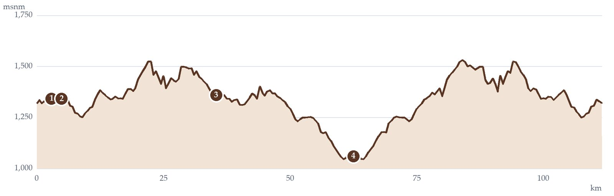
Itinerario
| Hora | Sitio | Lugar | Altitud |
|---|---|---|---|
| 07:40–09:40 | 1. Finca El Roble · Las Cañadas, bosque de niebla | Las Cañadas, Huatusco, Veracruz | 1,342 m |
| 09:45–11:25 | 2. Banco Nacional de Germoplasma de Chayote (BANGESe) | CAR Huatusco, Universidad Autónoma Chapingo | 1,341 m |
| 12:05–14:05 | 3. Rancho Contla · finca cafetalera | Ixhuatlán del Café, Veracruz | 1,359 m |
| 14:50–17:20 | 4. Hortín Fortín · huerto orgánico | Calzada Tlacotengo 514, Fortín de las Flores, Veracruz | 1,060 m |
1Finca El Roble · Las Cañadas, bosque de niebla
Recorrido por Finca El Roble, en Las Cañadas: un centro de agroecología y permacultura dentro de uno de los últimos remanentes de bosque de niebla del centro de Veracruz.
Las Cañadas, Huatusco, Veracruz
19°10′37.2″ N · 96°58′20.3″ O
1,342 m
C(w2)b(i') · Templado subhúmedo, el más húmedo de los subhúmedos, con lluvias en verano
07:40–09:40 · sábado 14 de noviembre de 2026
Productores y facilitadores del recorrido
Identidad del lugar
- El roble que le da nombre a la finca es un encino: en el bosque de niebla de Huatusco, robles y encinos (Quercus) comparten el dosel con el liquidámbar.
- Huatusco viene del náhuatl Cuauhtochco; es una de las regiones cafetaleras históricas de Veracruz, dentro de la Denominación de Origen «Café Veracruz».
- El bosque de niebla vive de la neblina casi diaria que sube del Golfo: guarda helechos arborescentes, orquídeas, bromelias y aves que no viven en otros bosques.
Medio físico y clima
- Paisaje
- Cañadas profundas cubiertas de bosque de niebla, con parcelas, huertos, cafetales y construcciones con materiales locales.
- Relieve
- Barrancas labradas por los arroyos que bajan de las faldas del Citlaltépetl hacia el Golfo, a unos 1,300–1,400 m.
- Suelo
- Andosoles de ceniza volcánica: profundos, oscuros, porosos y ricos en materia orgánica; se mantienen fértiles con composta, coberturas y la hojarasca del bosque.
Templado subhúmedo, el más húmedo de los subhúmedos, con lluvias en verano. La temperatura media anual es de 17.1 °C: el mes más fresco es enero (13.5 °C) y el más cálido junio (19.6 °C). Llueven 2,005 mm al año, 83 % de ellos entre mayo y octubre; ningún mes es seco: la neblina y las lloviznas de invierno mantienen la humedad.
El sistema productivo
Centro de agroecología y permacultura manejado por una cooperativa: conservación del bosque de niebla, producción diversificada de alimentos para autoconsumo y venta, y educación.
- Las Cañadas conserva alrededor de un centenar de hectáreas de bosque de niebla (las fuentes dan cifras distintas, de unas 100 a unas 300 ha), uno de los últimos remanentes de este ecosistema en el centro de Veracruz.
- Lo maneja una cooperativa cuyos socios cubren buena parte de sus necesidades con su trabajo: producen maíz, frijol, tubérculos, hortalizas, frutas, huevo, leche, queso, yogur, hongos y algo de carne, además de leña, bambú y madera para construir.
- Su fundador, el agrónomo Ricardo Romero, ha desarrollado sistemas de producción de alimentos a partir del cafetal, un sistema agroforestal que almacena carbono.
- Imparte talleres de agroecología, permacultura, bioconstrucción y ecotecnias, y ofrece caminatas guiadas por el bosque: un ejemplo de turismo regenerativo.
Lectura como sistema complejo adaptativo
7 cultivos o crianzas, 5 especies arbóreas o de vegetación, 7 especies de fauna y las familias, los técnicos y los mercados.
Conservar el bosque de niebla mantiene la humedad y el agua; el agua sostiene la producción de alimentos, y la producción justifica económicamente la conservación.
Una cooperativa que vive de producir y conservar a la vez: la gobernanza colectiva es la propiedad emergente central.
La presión por convertir el bosque en potrero o en cafetal de sol es el umbral; la permacultura y la educación ambiental son su capacidad de adaptación.
¿Puede una comunidad vivir de producir alimentos y de conservar el bosque al mismo tiempo? ¿Qué decisiones colectivas lo hacen posible?
Qué observar
- Cómo se distribuyen en el terreno el bosque, los huertos, los animales y las construcciones (diseño en zonas de la permacultura).
- Ciclos que se cierran: estiércol, composta, residuos de cocina, agua de lluvia y aguas grises.
- Diversidad de cultivos y animales, y qué se produce para comer y qué para vender.
- Bioconstrucción: materiales locales (bambú, madera, tierra) y por qué se eligen.
- Plantas, hongos, aves y epífitas del bosque de niebla en los senderos.
- Cómo toma decisiones la cooperativa y cómo se reparten el trabajo y los beneficios.
Alternativas desde la sostenibilidad
- Replicar el diseño en parcelas campesinas: huerto, frutales, animales menores y bosque en una misma unidad.
- Cafetales diversificados con árboles nativos, frutales y alimentos.
- Turismo regenerativo y educación como ingreso complementario.
- Pago por servicios ambientales por la conservación del bosque de niebla.
Biodiversidad
- Café bajo sombra
- Maíz y frijol
- Hortalizas y tubérculos
- Frutales
- Hongos
- Bambú
- Ganado de leche y aves de corral
- Liquidámbar (Liquidambar styraciflua)
- Encinos y robles (Quercus spp.)
- Helechos arborescentes
- Bromelias, orquídeas y musgos epífitos
- Chalahuite (Inga spp.)
- Tucaneta verde (Aulacorhynchus prasinus)
- Chachalaca (Ortalis vetula)
- Colibríes
- Aves migratorias de Norteamérica que invernan en el cafetal
- Ardilla gris (Sciurus aureogaster)
- Tlacuache (Didelphis sp.)
- Abejas nativas sin aguijón
2Banco Nacional de Germoplasma de Chayote (BANGESe)
Recorrido por el banco de germoplasma de Sechium edule: la diversidad del chayote, su conservación y su mejoramiento.
CAR Huatusco, Universidad Autónoma Chapingo
19°10′27.7″ N · 96°57′41.1″ O
1,341 m
C(w2)b(i') · Templado subhúmedo, el más húmedo de los subhúmedos, con lluvias en verano
09:45–11:25 · sábado 14 de noviembre de 2026
M.C. Víctor Manuel Cisneros Solano (Universidad Autónoma Chapingo)
Identidad del lugar
- La palabra chayote viene del náhuatl huitz ayotl, «calabaza espinosa».
- En la cocina veracruzana el chayote se come en caldos, guisos, rellenos y en dulce; también sus guías tiernas y la raíz, el chinchayote.
- El banco es parte del Grupo Interdisciplinario de Investigación en Sechium edule en México (GISeM) y del Centro Regional Universitario Oriente de la Universidad Autónoma Chapingo.
Medio físico y clima
- Paisaje
- Parcelas experimentales con emparrados de chayote dentro del campus universitario.
- Relieve
- Lomas de la meseta de Huatusco, sobre materiales volcánicos.
- Suelo
- Andosoles profundos con buen drenaje, que el chayote necesita para no pudrir sus raíces.
Templado subhúmedo, el más húmedo de los subhúmedos, con lluvias en verano. La temperatura media anual es de 17.1 °C: el mes más fresco es enero (13.5 °C) y el más cálido junio (19.6 °C). Llueven 2,005 mm al año, 83 % de ellos entre mayo y octubre; ningún mes es seco: la neblina y las lloviznas de invierno mantienen la humedad.
El sistema productivo
Colección viva de chayotes cultivados y silvestres en emparrado, para conservar su diversidad genética.
- El Banco Nacional de Germoplasma de Sechium edule (BANGESe) se fundó en 2005 en Huatusco para conservar las especies endémicas y las variantes biológicas del chayote; reúne colectas de 12 estados del país.
- México es centro de origen, domesticación y diversificación del chayote; su mayor plasticidad se observa en Veracruz.
- Hay complejos varietales como virens levis, nigrum spinosum, nigrum xalapensis, albus dulcis y albus minor, pero en el comercio solo se usa virens levis: verde claro, sin espinas y en forma de pera.
- Las variedades mejoradas desplazan a las poblaciones semidomesticadas: por eso el banco es clave contra la erosión genética.
Lectura como sistema complejo adaptativo
2 cultivos o crianzas, 3 especies arbóreas o de vegetación, 4 especies de fauna y las familias, los técnicos y los mercados.
Conservar muchos tipos de chayote permite encontrar respuestas a plagas, enfermedades y mercados nuevos, y esas respuestas justifican seguir conservando: la diversidad se paga a sí misma a largo plazo.
La colección es una memoria genética viva del sistema alimentario mesoamericano.
Si el mercado solo pide un tipo de chayote, la diversidad se pierde en el campo: el banco de germoplasma es la reserva que permite al sistema readaptarse.
Si en el mercado solo se vende un tipo de chayote, ¿por qué conservar decenas de tipos distintos?
Qué observar
- Formas, colores y espinas de los distintos chayotes de la colección.
- Cómo se construye el emparrado y por qué.
- Flores masculinas y femeninas, y los polinizadores que las visitan.
- Cómo se registra cada accesión (datos de pasaporte) y cómo se renueva.
- Otros usos de la planta: guías tiernas, raíz (chinchayote) y hojas.
Alternativas desde la sostenibilidad
- Ferias y bancos comunitarios de semillas de chayote criollo.
- Mercados para chayotes distintos al verde liso: blancos, oscuros, espinosos.
- Polinizadores nativos y manejo agroecológico de plagas en el emparrado.
Biodiversidad
- Chayote (Sechium edule)
- Especies silvestres emparentadas (S. compositum, S. chinantlense)
- Chalahuite (Inga spp.)
- Liquidámbar
- Árboles del campus y relictos de bosque mesófilo
- Abejas (Apis mellifera) y abejas nativas
- Avispas y otros polinizadores
- Ardilla gris
- Aves del campus
3Rancho Contla · finca cafetalera
Recorrido por el Rancho Contla (Finca Contla), finca cafetalera familiar de un egresado de la Orientación en Cafeticultura de la extinta carrera de Ingeniero Agrónomo Especialista en Zonas Tropicales (Universidad Autónoma Chapingo): sistemas de producción de café con cultivos asociados, manejados de forma sostenible, del cafetal al beneficio y a la taza.
Ixhuatlán del Café, Veracruz
19°03′33.1″ N · 96°59′11.1″ O
1,359 m
(A)C(f)a(i')g · Semicálido del grupo de los templados húmedo con lluvias todo el año
12:05–14:05 · sábado 14 de noviembre de 2026
Egresado de la Orientación en Cafeticultura, Ingeniero Agrónomo Especialista en Zonas Tropicales (Universidad Autónoma Chapingo)
Identidad del lugar
- El Rancho Contla (Finca Contla) es la finca familiar de un egresado de la Orientación en Cafeticultura de la extinta carrera de Ingeniero Agrónomo Especialista en Zonas Tropicales de la Universidad Autónoma Chapingo, formada en el CAR Huatusco: la ruta va del aula a la finca.
- Ixhuatlán del Café pertenece a la región de las Altas Montañas de Veracruz; el café, el maíz y los frutales son sus principales productos.
- Noviembre es el inicio de la cosecha del café: es probable ver el corte de cereza madura y el beneficio en marcha.
- El municipio tiene unos 23,000 habitantes, y cerca de dos terceras partes de su territorio son de uso agrícola.
Medio físico y clima
- Paisaje
- Lomas y barrancas cubiertas de cafetal bajo sombra; el municipio lleva el café en su nombre.
- Relieve
- Ladera de barlovento de la Sierra Madre Oriental, entre 1,000 y 1,500 m, con barrancas profundas.
- Suelo
- Andosoles y suelos rojos arcillosos en ladera; la sombra y la hojarasca los protegen de la erosión.
Semicálido del grupo de los templados húmedo con lluvias todo el año. La temperatura media anual es de 20.2 °C: el mes más fresco es enero (17.2 °C) y el más cálido mayo (22.4 °C). Llueven 1,903 mm al año, 83 % de ellos entre mayo y octubre; ningún mes es seco: la neblina y las lloviznas de invierno mantienen la humedad.
El sistema productivo
Finca cafetalera familiar con sistemas de producción de café y cultivos asociados bajo un manejo sostenible: el cafetal bajo sombra comparte la parcela con otros cultivos que diversifican el ingreso, y el beneficio lleva el grano del despulpado, la fermentación, el lavado y el secado hasta el café pergamino y la taza.
- El beneficio húmedo separa la pulpa y el mucílago; el natural seca la cereza entera; el honey deja parte del mucílago. Cada proceso cambia el sabor en taza.
- La altitud alarga la maduración del grano y da cafés más ácidos y aromáticos: por eso el café «de altura» se paga mejor.
Lectura como sistema complejo adaptativo
4 cultivos o crianzas, 5 especies arbóreas o de vegetación, 7 especies de fauna y las familias, los técnicos y los mercados.
La sombra protege al café y produce hojarasca; la hojarasca alimenta el suelo y retiene el agua; un cafetal sano da ingreso para seguir manejando la sombra y los cultivos asociados.
La calidad en taza emerge de la altitud, la variedad, la sombra, el beneficio y el oficio de la familia.
La roya, la caída del precio internacional y la escasez de mano de obra en la cosecha son umbrales; la diversidad de cultivos asociados y la venta directa son su capacidad de adaptación.
¿Cómo combina una finca familiar el café con otros cultivos para producir de forma sostenible? ¿Y qué hace falta para que el valor de una taza de café de especialidad se quede en la finca y en la comunidad?
Qué observar
- Qué cultivos se asocian al café y qué aporta cada uno (sombra, alimento, ingreso, suelo).
- Qué aprendió en la Orientación en Cafeticultura de Chapingo que hoy aplica en su finca.
- Proceso de beneficio: equipo, uso de agua y tiempos.
- Qué se hace con la pulpa y las aguas mieles del beneficio.
- Secado: patios, camas africanas o secadoras.
- Cómo se mide la calidad: catación, puntaje y defectos.
- A quién se vende: intermediario, cooperativa, tostador o venta directa.
Alternativas desde la sostenibilidad
- Tratamiento de aguas mieles y compostaje de la pulpa.
- Beneficios ecológicos de bajo consumo de agua.
- Marca propia, turismo del café y venta directa.
- Organización de productores para comprar y vender juntos.
Biodiversidad
- Café arábigo
- Plátano
- Maíz
- Frutales
- Chalahuite y jinicuil (Inga spp.)
- Plátano (Musa spp.) como sombra temporal
- Liquidámbar (Liquidambar styraciflua)
- Cedro (Cedrela odorata)
- Helechos arborescentes y epífitas (bromelias, orquídeas)
- Tucaneta verde (Aulacorhynchus prasinus)
- Chachalaca (Ortalis vetula)
- Colibríes
- Aves migratorias de Norteamérica que invernan en el cafetal
- Ardilla gris (Sciurus aureogaster)
- Tlacuache (Didelphis sp.)
- Abejas nativas sin aguijón
En línea: Facebook de Finca Contla
4Hortín Fortín · huerto orgánico
Visita a Hortín Fortín, huerto orgánico y empresa familiar fundada por Santiago Aguilar Zilli, egresado de la Licenciatura en Redes Agroalimentarias de la Universidad Autónoma Chapingo; comida (por confirmar) y cierre del recorrido.
Calzada Tlacotengo 514, Fortín de las Flores, Veracruz
18°55′06.0″ N · 96°59′30.8″ O
1,060 m
(A)C(f)a(i')g · Semicálido del grupo de los templados húmedo con lluvias todo el año
14:50–17:20 · sábado 14 de noviembre de 2026
Santiago Aguilar Zilli, egresado de la Licenciatura en Redes Agroalimentarias (Universidad Autónoma Chapingo)
Identidad del lugar
- Hortín Fortín es una empresa familiar fundada por Santiago Aguilar Zilli, egresado de la Licenciatura en Redes Agroalimentarias de la Universidad Autónoma Chapingo.
- El nombre de Fortín viene de una pequeña fortificación colonial que vigilaba el paso por el río Metlac; «de las Flores», de su fama en el cultivo de flores de ornato. La gardenia está en su escudo.
- En la región también se cultivan café y caña (con trapiches de piloncillo) y se produce hoja de plátano para los tamales veracruzanos.
Medio físico y clima
- Paisaje
- Un huerto escondido entre árboles en plena ciudad de Fortín, en el valle templado-cálido entre Córdoba y Orizaba.
- Relieve
- Valle del río Metlac al pie de la Sierra Madre Oriental, a unos 1,000 m.
- Suelo
- Suelos profundos de origen volcánico y aluvial; en el huerto se enriquecen con composta y coberturas.
Semicálido del grupo de los templados húmedo con lluvias todo el año. La temperatura media anual es de 20.9 °C: el mes más fresco es enero (17.4 °C) y el más cálido mayo (23.5 °C). Llueven 1,918 mm al año, 82 % de ellos entre mayo y octubre; ningún mes es seco: la neblina y las lloviznas de invierno mantienen la humedad.
El sistema productivo
Huerto orgánico diversificado con transformación en la misma empresa: hortalizas, hierbas aromáticas y medicinales, frutales y abejas, y una línea de conservas, fermentos, infusiones y cosmética natural que se vende directo al consumidor, con envases retornables.
- Del huerto: brotes y microgreens, flores comestibles, ejotes, arúgula, apio, rábano, chile habanero, cúrcuma, jengibre y germinados de lenteja.
- Hierbas de la cocina y la medicina tradicional mexicana: epazote, estafiate, muicle (sangre de Cristo), ruda, romero, té limón, tlanepa u hoja santa, cilantro cimarrón y cebollín xonacate, además de hoja de guayabo, níspero y guanábano.
- Conservas y fermentos: kombucha de jengibre, tamarindo o jamaica; ginger beer; chucrut dorado (cúrcuma y tomillo), morado y blanco (jengibre); curcumiel; pesto, chimichurri, salsa macha de chile comanero con arándanos, mermeladas, mostaza con vinagre de kombucha y escabeches.
- De la colmena: miel multiflora de la Sierra de Zongolica, y polen y propóleo de abejas meliponinas, las abejas sin aguijón nativas de México.
- También infusiones funcionales de hierbas deshidratadas, cosmética natural con caléndula, vainilla y café agroecológico de la Finca Coralillo. Sus recipientes son retornables.
Lectura como sistema complejo adaptativo
6 cultivos o crianzas, 5 especies arbóreas o de vegetación, 5 especies de fauna y las familias, los técnicos y los mercados.
El huerto abastece a la transformación; la transformación da valor a los excedentes y financia el huerto; los envases retornables cierran el ciclo con el consumidor.
Una empresa familiar de alimentos que emerge de la combinación de agroecología, oficio y venta directa.
Depende de un mercado urbano cercano y de la confianza del consumidor; la diversidad de productos amortigua la variación de cada cosecha.
¿Cómo convierte una empresa familiar un huerto pequeño en un negocio que vive de agregar valor (fermentar, conservar, secar) y de vender directo, sin intermediarios?
Qué observar
- Cuántas especies hay en el huerto y cómo se acomodan en poco espacio.
- Cómo se fertiliza y se protege el huerto sin agroquímicos de síntesis.
- Procesos de transformación: fermentación de kombucha y chucrut, secado de hierbas, elaboración de conservas.
- Las cajas de abejas sin aguijón (meliponas) y cómo se manejan.
- Cómo funciona el sistema de envases retornables y la venta directa (redes sociales, pedidos).
- Qué aprendió en la Licenciatura en Redes Agroalimentarias que hoy aplica en la empresa.
Alternativas desde la sostenibilidad
- Encadenar a productores de la región como proveedores (como la miel de Zongolica o el café de Finca Coralillo).
- Recuperar y valorar las plantas medicinales y condimentos tradicionales.
- Meliponicultura: conservar las abejas nativas sin aguijón y aprovechar su polen y propóleo.
- Prácticas profesionales y servicio social para estudiantes en emprendimientos agroalimentarios.
Biodiversidad
- Hortalizas y brotes
- Hierbas aromáticas y medicinales
- Cúrcuma y jengibre
- Flores comestibles
- Frutales (guayaba, níspero, guanábana)
- Abejas sin aguijón
- Bambú
- Guayabo, níspero y guanábano
- Ave del paraíso (Strelitzia)
- Pata de elefante (Beaucarnea)
- Árboles de la calzada Tlacotengo
- Abejas sin aguijón (meliponinos)
- Abejas melíferas
- Colibríes
- Mariposas y otros polinizadores
- Lombrices de composta
En línea: Facebook: Hortín Fortín · Instagram: @hortinfortin · WhatsApp 271 124 2708
Los cultivos de la ruta: de la semilla a la empresa
Café Coffea arabica L.
- Origen
- Originario de las montañas de Etiopía. Llegó a Veracruz a finales del siglo XVIII y la región de Córdoba, Huatusco y Coatepec fue de las primeras zonas cafetaleras de México.
- Variedades
- Typica, Bourbon, Caturra, Garnica, Mundo Novo; y, frente a la roya, Costa Rica 95, Marsellesa y otras tolerantes. En cafés de especialidad, también Geisha.
- Clima
- Arábigo de altura: entre 900 y 1,600 m en Veracruz, con 1,500 a 2,500 mm de lluvia, temperaturas templadas y sombra que lo protege del sol y del frío.
- Manejo
- Sombra diversificada, poda, renovación de plantas viejas, abonos orgánicos con la pulpa compostada y manejo de la roya y la broca.
- Plagas y enfermedades
- Roya del cafeto (Hemileia vastatrix), que causó una epidemia en México en 2012–2013; broca (Hypothenemus hampei); ojo de gallo en zonas muy húmedas.
- Transformación
- Beneficio húmedo (lavado), natural o honey → café pergamino → morteado y selección → café verde (oro) → tostado → taza. La catación califica la calidad.
- Mercado
- Café convencional por intermediarios o cooperativas, o café de especialidad con precio por calidad y venta directa. La región está dentro de la Denominación de Origen «Café Veracruz».
✦ Un cafetal bajo sombra puede albergar una gran diversidad de aves: por eso se habla de café «amigable con las aves».
Chayote Sechium edule (Jacq.) Sw.
- Origen
- México es su centro de origen, domesticación y diversificación. Del náhuatl huitz ayotl, «calabaza espinosa». De Mesoamérica pasó a Centroamérica; en el siglo XVIII llegó a Europa y África, y a fines del XIX a Asia.
- Variedades
- Complejos varietales virens levis (verde liso, el comercial), nigrum spinosum, nigrum xalapensis, albus dulcis y albus minor, además de especies silvestres emparentadas.
- Clima
- Planta trepadora de clima templado húmedo y subhúmedo (climas C de Köppen), propia de las regiones de bosque mesófilo; necesita suelo con buen drenaje.
- Manejo
- Emparrado (tapanco) para sostener la guía, polinización por abejas, podas de guías, fertilización y control de enfermedades del fruto en temporada húmeda.
- Plagas y enfermedades
- Enfermedades del fruto y de la guía en temporada lluviosa; insectos chupadores; pudrición de raíz en suelos encharcados.
- Transformación
- Se vende fresco, sobre todo el verde liso; también se aprovechan las guías tiernas, la raíz (chinchayote) y las hojas. Se estudian sus extractos y cucurbitacinas con fines medicinales.
- Mercado
- Veracruz concentra buena parte de la producción y la exportación del país, sobre todo a Estados Unidos, con el tipo verde liso.
✦ Las variedades mejoradas desplazan a las criollas: un banco de germoplasma guarda la diversidad que el mercado ya no siembra.
Plátano Musa spp.
- Origen
- Originario del sureste de Asia; llegó a América en el siglo XVI.
- Variedades
- Roatán, macho, dominico, manzano y morado; en la región también se cultiva para hoja.
- Clima
- Cálido y húmedo; en la montaña cafetalera crece como sombra temporal del café.
- Manejo
- Como sombra temporal del cafetal y fuente de fruta y hoja; deshije, deshoje y manejo de la sigatoka.
- Plagas y enfermedades
- Sigatoka negra, picudo negro y nematodos.
- Transformación
- Fruta fresca, plátano macho para cocinar y hoja para envolver tamales.
- Mercado
- Venta local y regional; la hoja de plátano tiene un mercado propio en la región de Fortín.
✦ Sin la hoja de plátano no habría tamales veracruzanos de hoja: un cultivo de sombra que también es cultura.
Caña de azúcar Saccharum officinarum L.
- Origen
- Originaria de Nueva Guinea; llegó a México con los españoles, y Veracruz es hoy el principal estado cañero del país.
- Variedades
- Variedades mejoradas mexicanas y otras introducidas.
- Clima
- Cálido y subhúmedo; en la región ocupa las partes bajas y los valles, por debajo del cafetal.
- Manejo
- Plantación por esquejes, fertilización, control de malezas y corte.
- Plagas y enfermedades
- Mosca pinta y barrenadores del tallo.
- Transformación
- Azúcar en los ingenios y piloncillo en los trapiches tradicionales de la región.
- Mercado
- Ingenios azucareros; piloncillo en mercados locales.
✦ La quema de la caña antes del corte afecta el aire y el suelo: la cosecha en verde es una alternativa.
Hierbas aromáticas y medicinales Epazote (Dysphania ambrosioides), estafiate (Artemisia ludoviciana), muicle (Justicia spicigera), hoja santa (Piper auritum), cúrcuma (Curcuma longa), jengibre (Zingiber officinale) y otras
- Origen
- Muchas son nativas de México y parte de su cocina y su medicina tradicional (epazote, estafiate, muicle, hoja santa); otras, como la cúrcuma y el jengibre, vienen de Asia y se adaptaron muy bien al clima cálido y húmedo de Veracruz.
- Variedades
- En el huerto: albahaca y albahaca clavo, cebollín xonacate, cebollino gigante, cilantro cimarrón, romero, ruda, té limón, epazote, estafiate, muicle y hoja santa.
- Clima
- Templado-cálido y húmedo; la cúrcuma y el jengibre necesitan calor, humedad y suelo suelto rico en materia orgánica.
- Manejo
- Siembra diversificada en camas, abonos orgánicos y composta, riego y cortes frecuentes; las plantas aromáticas ayudan a ahuyentar plagas en el huerto.
- Plagas y enfermedades
- Pulgones, hongos de suelo en temporada muy húmeda y pudrición de rizomas si el suelo se encharca.
- Transformación
- Hierba fresca, deshidratada para infusiones, en polvo (cúrcuma), fermentada (curcumiel, kombucha de jengibre) o en conservas y aderezos.
- Mercado
- Venta directa al consumidor, mercados orgánicos y pedidos por redes sociales, con envases retornables.
✦ El muicle tiñe el agua de un color rojo-morado; por eso también se le llama «sangre de Cristo».
Gardenia y flores de ornato Gardenia jasminoides J. Ellis
- Origen
- La gardenia es originaria de Asia oriental; en Fortín se cultiva como agroindustria desde el siglo XIX.
- Variedades
- Gardenias de flor grande y aromática; en la región también orquídeas, anturios, azaleas y follajes de corte.
- Clima
- Templado-cálido y húmedo, con suelos ácidos, como el del valle de Fortín, a unos 1,000 m.
- Manejo
- En vivero o a cielo abierto, con suelo ácido, riego y podas.
- Plagas y enfermedades
- Cochinillas, pulgones y hongos de la raíz.
- Transformación
- Flor de corte y planta en maceta; se investigan usos alternativos para la flor que no se vende.
- Mercado
- Mercados regionales y nacionales de flores.
✦ La gardenia está en el escudo de Fortín: una flor que le dio su apellido a una ciudad.
Lo que enseñan trece sitios leídos juntos
Patrones, comparaciones y preguntas abiertas para la investigación y el acompañamiento.
Leídos juntos, los trece sitios no son trece casos aislados: son trece respuestas de un mismo territorio a distintas condiciones de altitud, clima, mercado e historia. La comparación permite reconocer patrones que se repiten y que ayudan a orientar la investigación y el acompañamiento técnico.
De los diez elementos, los más frecuentes son diversidad (9 de 13 sitios), economía circular y solidaria (9) y resiliencia (7); los menos expresados son eficiencia (2) y gobernanza responsable (3). La diversidad y la economía circular y solidaria aparecen como el núcleo común de las experiencias visitadas; la eficiencia y la gobernanza responsable, como las dimensiones que más conviene fortalecer y documentar.
Seis patrones del territorio
La altitud ordena, la gente decide
El gradiente altitudinal define qué es posible —vid y guanábana abajo, café y chayote en medio, frutillas y papa arriba—, pero en cada franja las familias eligen combinaciones distintas. El clima fija los umbrales; la diversidad de estrategias es la respuesta.
Transformar es retroalimentar
Pulpa, queso, tortilla, café de especialidad, conservas y fermentos: la transformación local aparece en todas las rutas y es la retroalimentación económica que permite sostener la diversidad. Donde el valor se queda en el territorio, conservar tiene sentido.
La universidad como agente del sistema
Egresados de Chapingo al frente de fincas y empresas, un banco de germoplasma universitario, un investigador que produce kiwi, una universidad interserrana: el conocimiento formal no está afuera del sistema, es uno de sus agentes y parte de su memoria.
Cerrar ciclos, el reto pendiente
Suero de leche, nejayote, pulpa y aguas mieles del café, cáscaras de fruta: cada transformación deja un residuo. Convertirlo en insumo es la oportunidad más concreta de pasar de la eficiencia a la economía circular.
La cuenca une las rutas
El agua que nace en los bosques de Chilchotla baja por el río La Antigua hasta Huatusco y Puente Nacional. Las rutas 1 y 2 son dos extremos del mismo sistema hídrico: lo que se decide arriba se vive abajo.
Resiliencia es diversidad con memoria
Los sitios más resilientes combinan muchas especies con un conocimiento que las maneja: la milpa con su semilla criolla, el cafetal con su sombra diversa, la colección viva del chayote. Diversidad sin memoria es fragilidad; memoria sin diversidad, nostalgia.
Preguntas para seguir investigando
- ¿Qué proporción del valor final de cada producto transformado se queda en la familia y en la comunidad?
- ¿Cómo cambian la materia orgánica y la infiltración del suelo entre el cafetal diverso, el potrero y el huerto de frutillas?
- ¿Qué variedades de maíz, chayote y café se conservan solo en manos campesinas, y qué amenaza su continuidad?
- ¿Qué arreglos de gobernanza permitirían pagar a la parte alta de la cuenca por el agua que reciben las partes bajas?
- ¿Cómo se comportarán estos sistemas ante el aumento de temperatura previsto para la región, y qué cultivos subirán o bajarán de franja?
- ¿Qué indicadores sencillos podrían medir, año con año, la resiliencia de cada finca con participación de las familias?
Glosario y referencias
Glosario
- Agroecosistema
- Sistema agrícola entendido como ecosistema modificado por las personas, con sus flujos de energía, materia e información.
- Andosol
- Suelo derivado de ceniza volcánica, oscuro, poroso y rico en materia orgánica; típico de la montaña cafetalera.
- Banco de germoplasma
- Colección de semillas o de plantas vivas que conserva la diversidad genética de una especie.
- Beneficio húmedo
- Proceso que separa la pulpa y el mucílago del grano de café con agua, antes del secado.
- Bosque de niebla
- Bosque mesófilo de montaña: vive de la neblina casi diaria y es uno de los ecosistemas más diversos y amenazados de México.
- Climograma
- Gráfica que muestra juntas la temperatura y la lluvia de cada mes.
- Emergencia
- Aparición de propiedades del conjunto que ninguna de sus partes tiene por separado.
- Köppen–García
- Sistema de clasificación climática de Köppen con las modificaciones de Enriqueta García para México.
- Nejayote
- Agua alcalina que queda de cocer el maíz con cal en la nixtamalización.
- Panarquía
- Estructura de sistemas anidados en distintas escalas, cada uno con sus ciclos de crecimiento, conservación, colapso y reorganización.
- Resiliencia
- Capacidad de un sistema de absorber perturbaciones y reorganizarse sin perder su identidad.
- Retroalimentación
- Proceso en que un resultado regresa como causa y refuerza o amortigua el cambio.
- Silvopastoreo
- Integración deliberada de árboles, pastos y ganado en una misma superficie.
- Umbral
- Punto a partir del cual un sistema cambia de régimen y difícilmente regresa al estado anterior.
Referencias
- Altieri, M. A. (1995). Agroecology: The science of sustainable agriculture (2nd ed.). Westview Press.
- FAO. (2018). Los 10 elementos de la agroecología: Guía para la transición hacia sistemas alimentarios y agrícolas sostenibles. Organización de las Naciones Unidas para la Alimentación y la Agricultura.
- Farr, T. G., Rosen, P. A., Caro, E., Crippen, R., Duren, R., Hensley, S., Kobrick, M., Paller, M., Rodriguez, E., Roth, L., Seal, D., Shaffer, S., Shimada, J., Umland, J., Werner, M., Oskin, M., Burbank, D., y Alsdorf, D. (2007). The Shuttle Radar Topography Mission. Reviews of Geophysics, 45(2), RG2004. https://doi.org/10.1029/2005RG000183
- Folke, C. (2006). Resilience: The emergence of a perspective for social–ecological systems analyses. Global Environmental Change, 16(3), 253–267. https://doi.org/10.1016/j.gloenvcha.2006.04.002
- García, E. (2004). Modificaciones al sistema de clasificación climática de Köppen (5.ª ed.). Instituto de Geografía, Universidad Nacional Autónoma de México.
- García, R. (2006). Sistemas complejos: Conceptos, método y fundamentación epistemológica de la investigación interdisciplinaria. Gedisa.
- Gliessman, S. R. (2015). Agroecology: The ecology of sustainable food systems (3rd ed.). CRC Press.
- Gunderson, L. H., y Holling, C. S. (Eds.). (2002). Panarchy: Understanding transformations in human and natural systems. Island Press.
- Holland, J. H. (1995). Hidden order: How adaptation builds complexity. Addison-Wesley.
- Levin, S. A. (1998). Ecosystems and the biosphere as complex adaptive systems. Ecosystems, 1(5), 431–436. https://doi.org/10.1007/s100219900037
- Moguel, P., y Toledo, V. M. (1999). Biodiversity conservation in traditional coffee systems of Mexico. Conservation Biology, 13(1), 11–21. https://doi.org/10.1046/j.1523-1739.1999.97153.x
- Ostrom, E. (2009). A general framework for analyzing sustainability of social-ecological systems. Science, 325(5939), 419–422. https://doi.org/10.1126/science.1172133
- Servicio Meteorológico Nacional. (s. f.). Normales climatológicas por estado. Comisión Nacional del Agua. https://smn.conagua.gob.mx/
- Toledo, V. M., y Barrera-Bassols, N. (2008). La memoria biocultural: La importancia ecológica de las sabidurías tradicionales. Icaria.
Guías de campo citadas
- Mojica-Zárate, H. T., Partida-Sedas, J. G., Alejo-Bello, S., Rojas-Reyes, J. O., y Díaz-José, Ó. (2026). Recorrido por zonas tropicales de agricultura agroecológica (Versión 1.1.3) [Software]. Zenodo. https://doi.org/10.5281/zenodo.23787066
- Mojica-Zárate, H. T., Partida-Sedas, J. G., Díaz-José, Ó., Alejo-Bello, S., y Rojas-Reyes, J. O. (2026). Ruta de Altura: frutales de montaña y agroecología en las faldas del Citlaltépetl (Versión 1.0.3) [Software]. Zenodo. https://doi.org/10.5281/zenodo.23787064
- Mojica-Zárate, H. T., Partida-Sedas, J. G., Díaz-José, Ó., Alejo-Bello, S., y Rojas-Reyes, J. O. (2026). Ruta del Café y el Chayote: de la semilla a la empresa en la montaña cafetalera de Veracruz (Versión 1.0.0) [Software]. Zenodo. https://doi.org/10.5281/zenodo.23843072
Guía de la Ruta 1: Zonas tropicales de agricultura agroecológica
Cómo instalarla, usarla sin señal y aprovechar cada sección en el recorrido.
Recorrido por zonas tropicales de agricultura agroecológica
https://hectortecumshe-ai.github.io/recorridos-somexa/2026-ruta-1/
DOI: 10.5281/zenodo.23787066 · versión 1.1.3 · licencia CC BY 4.0
Las tres guías son aplicaciones web progresivas: se abren desde el navegador del teléfono, sin descargar nada de una tienda de aplicaciones, y quedan guardadas para usarse sin señal durante el recorrido. Basta con abrirlas una vez con internet antes de salir. No piden registro ni datos personales; las notas y fotos del cuaderno se guardan solo en el teléfono de quien las toma.
Antes de salir
- Escanea el código QR o abre el enlace con internet (wifi del hotel o del CAR).
- Espera a que cargue por completo; en Android aparece la opción «Instalar» o «Agregar a la pantalla principal»; en iPhone, en Safari, «Compartir → Agregar a inicio».
- Pon el teléfono en modo avión y vuelve a abrir la guía: si se ve completa, ya funciona sin señal.
- Carga tu teléfono y, si puedes, lleva una batería externa: el GPS gasta energía.
- Activa la ubicación del teléfono si quieres usar «Seguir mi ubicación» y «¿Hacia dónde queda?».
Portada e itinerario
La guía se lee de arriba abajo, como un cuaderno: la portada resume la ruta, la hora de salida, los kilómetros y los sitios.
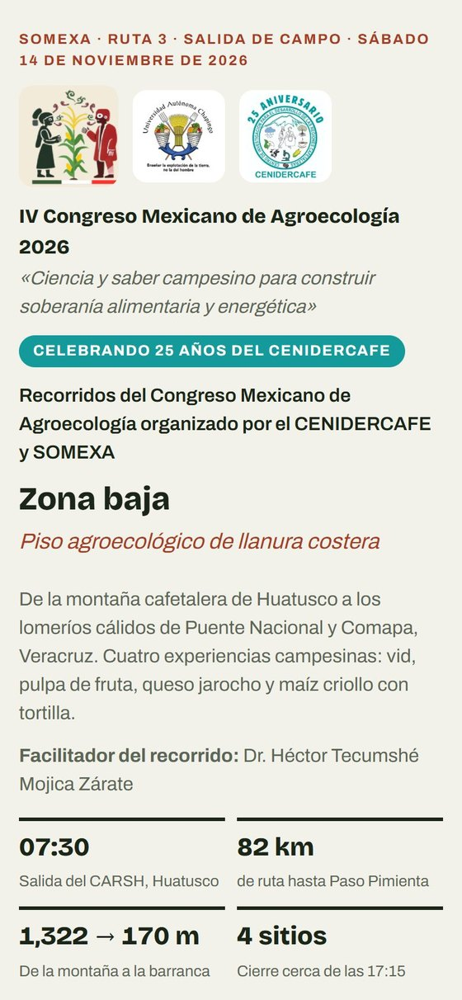
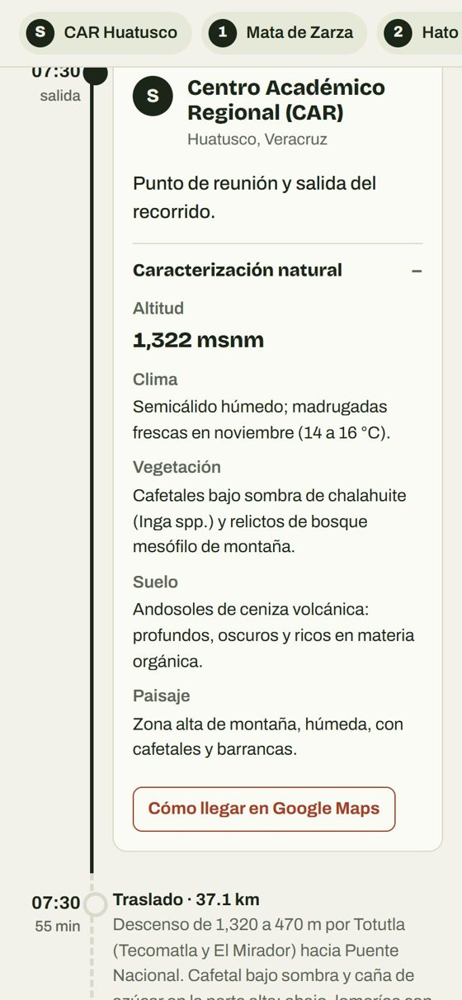
Mapas y perfil
El mapa en 3D se gira y se acerca con los dedos; el mapa plano muestra la ruta y los pueblos; el perfil indica cómo cambia la altitud y el paisaje.
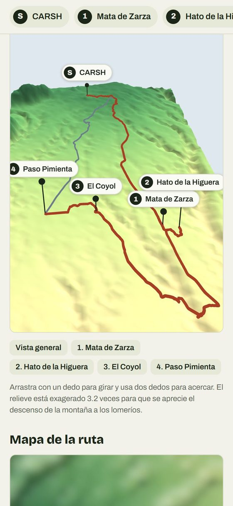
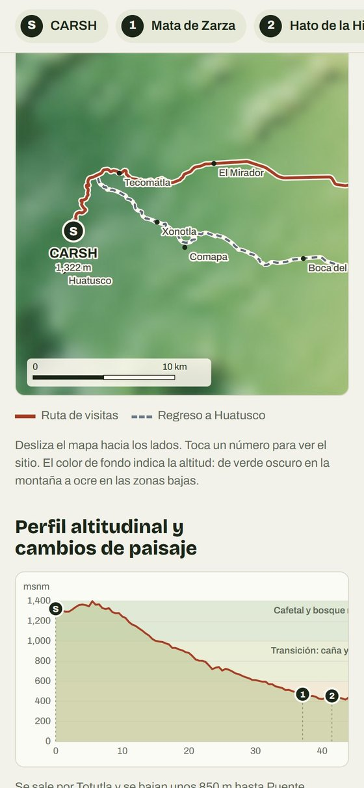
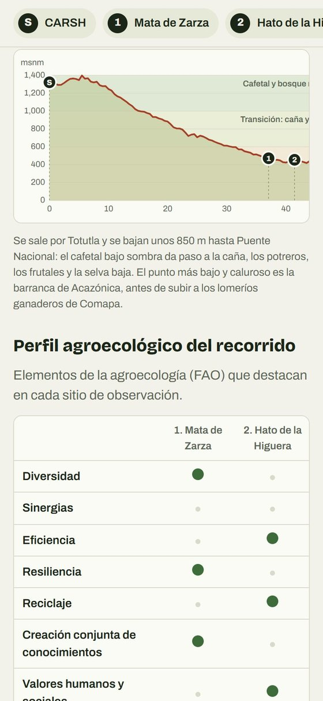
Perfil agroecológico
Una tabla compara qué elementos de la agroecología y qué actividades se observan en cada sitio; úsala para preparar las preguntas.
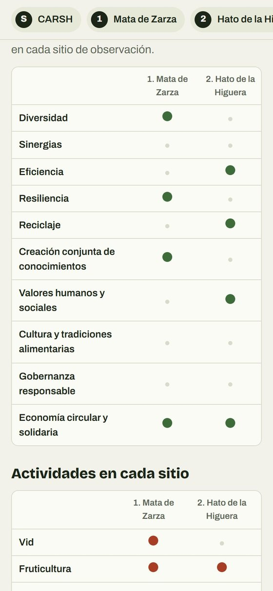
En cada sitio del itinerario, el botón Cómo llegar en Google Maps abre la navegación hasta el punto (con señal). La sección «Caracterización natural» se despliega para ver altitud, clima, vegetación, suelo y paisaje.
Si algo no funciona
| Problema | Qué hacer |
|---|---|
| La guía no abre sin señal | Ábrela una vez con internet y espera a que termine de cargar. Si borraste los datos del navegador, repite el paso. |
| No aparece mi ubicación | Activa la ubicación del teléfono y da permiso al navegador. Bajo techo o en barrancas el GPS tarda más. |
| El mapa en 3D va lento | Es normal en teléfonos sencillos; usa el mapa plano y el perfil, que contienen la misma información. |
| Perdí mis notas | Las notas viven en el navegador del teléfono: no las borres y descarga tu cuaderno en Word al terminar. Usa «Guardar respaldo» para pasarlas a otro teléfono. |
| Quiero compartir la guía | En «Más», usa «Compartir enlace» o muestra el código QR para que otra persona lo escanee. |
Guía de la Ruta 2: Ruta de Altura
Cómo instalarla, usarla sin señal y aprovechar cada sección en el recorrido.
Ruta de Altura: frutales de montaña y agroecología en las faldas del Citlaltépetl
https://hectortecumshe-ai.github.io/recorridos-somexa/2026-ruta-2/
DOI: 10.5281/zenodo.23787064 · versión 1.0.3 · licencia CC BY 4.0
Las tres guías son aplicaciones web progresivas: se abren desde el navegador del teléfono, sin descargar nada de una tienda de aplicaciones, y quedan guardadas para usarse sin señal durante el recorrido. Basta con abrirlas una vez con internet antes de salir. No piden registro ni datos personales; las notas y fotos del cuaderno se guardan solo en el teléfono de quien las toma.
Antes de salir
- Escanea el código QR o abre el enlace con internet (wifi del hotel o del CAR).
- Espera a que cargue por completo; en Android aparece la opción «Instalar» o «Agregar a la pantalla principal»; en iPhone, en Safari, «Compartir → Agregar a inicio».
- Pon el teléfono en modo avión y vuelve a abrir la guía: si se ve completa, ya funciona sin señal.
- Carga tu teléfono y, si puedes, lleva una batería externa: el GPS gasta energía.
- Activa la ubicación del teléfono si quieres usar «Seguir mi ubicación» y «¿Hacia dónde queda?».
La pestaña Ruta
Abre con la portada de la ruta, las cifras clave y los botones para llegar al primer sitio. Más abajo, el mapa en 3D con el relieve real: «Recorrer la ruta» lleva un autobús virtual por el camino y «Seguir mi ubicación en vivo» muestra dónde vas con el GPS, sin señal.
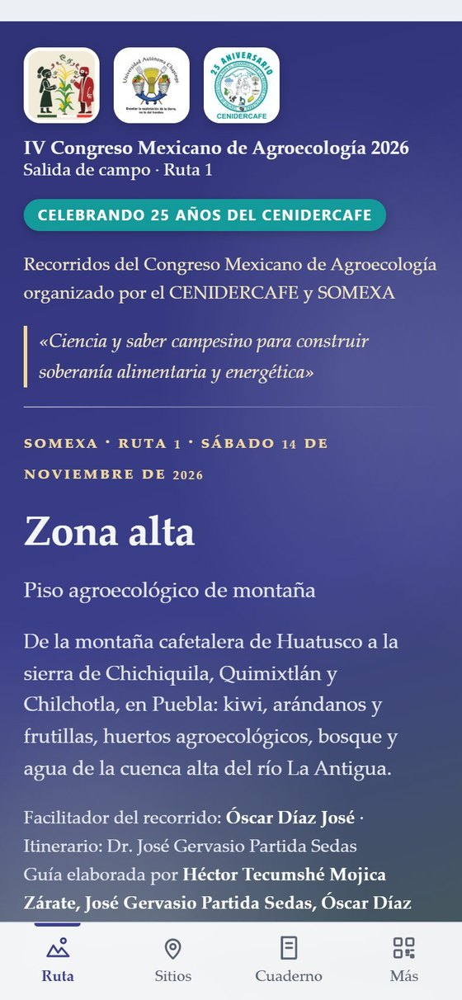
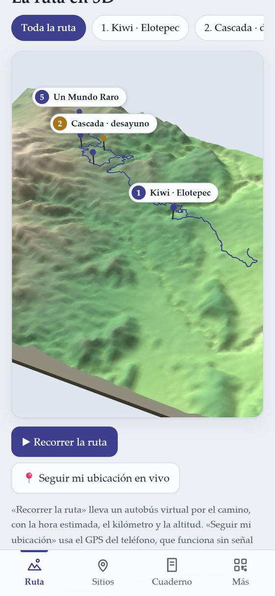
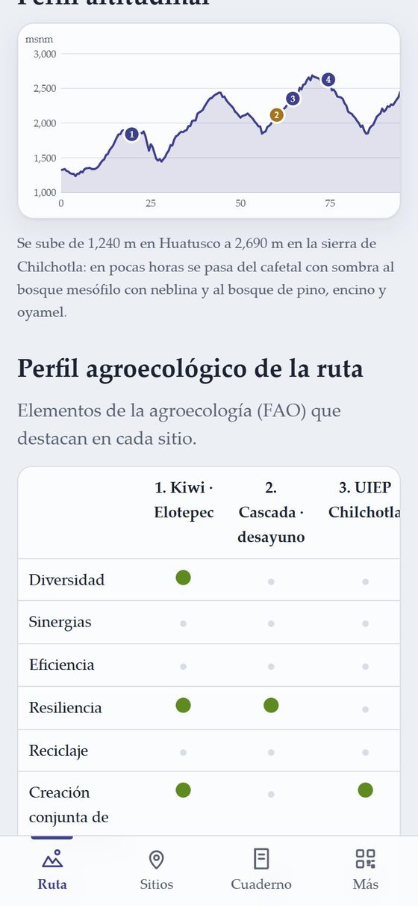
La pestaña Sitios
Lista el itinerario con horarios estimados. Cada sitio se despliega con su identidad, condiciones físico-geográficas y climograma, perfil agroecológico, qué observar, alternativas y biodiversidad, además de «Cómo llegar» con o sin señal.
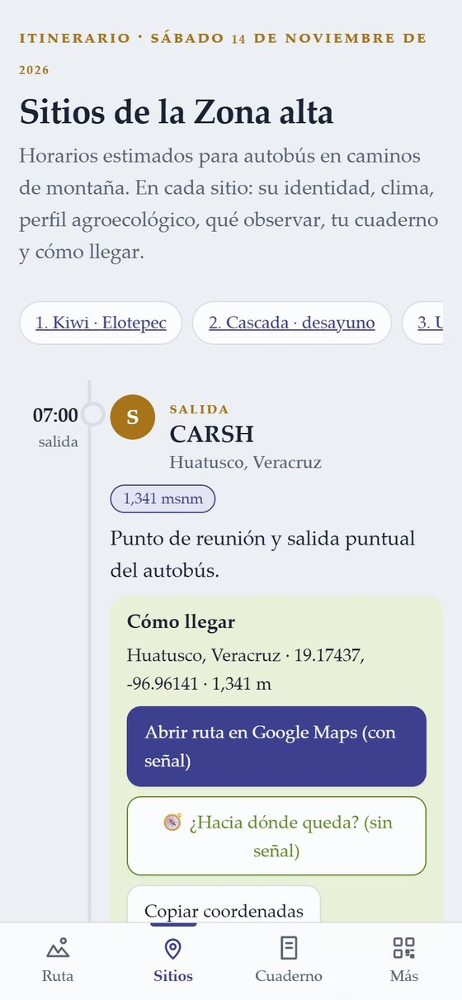
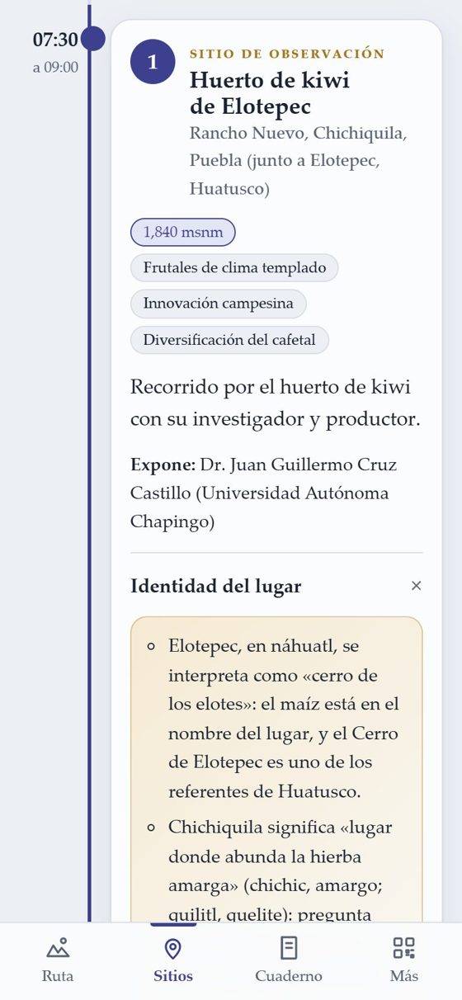
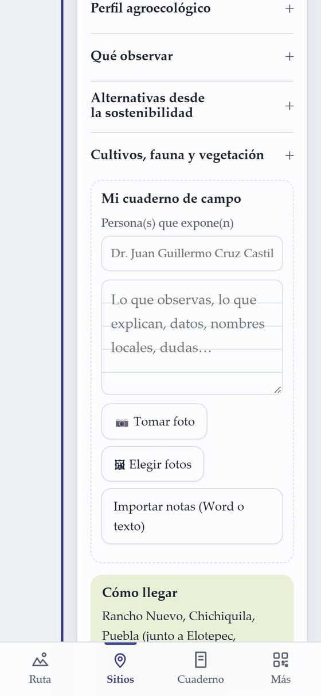
El Cuaderno y la pestaña Más
En cada sitio puedes escribir notas, tomar o elegir fotos e importar notas de Word. El Cuaderno reúne todo y lo descarga como documento de Word o como archivo .zip de fotos; «Guardar respaldo» pasa tus notas a otro teléfono. En «Más» están el código QR para compartir la guía, qué llevar, aspectos a tomar en cuenta, créditos, cómo instalarla y la familia de aplicaciones Ratio.
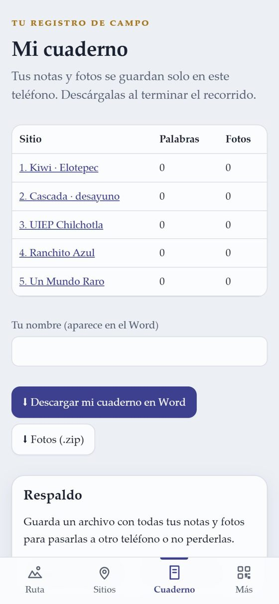
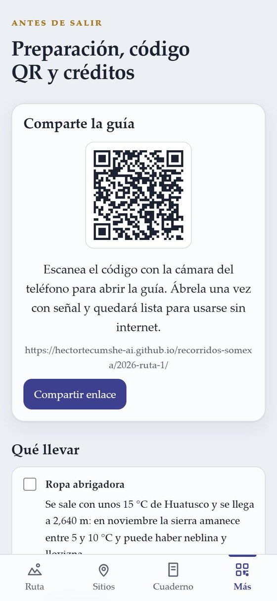
Si algo no funciona
| Problema | Qué hacer |
|---|---|
| La guía no abre sin señal | Ábrela una vez con internet y espera a que termine de cargar. Si borraste los datos del navegador, repite el paso. |
| No aparece mi ubicación | Activa la ubicación del teléfono y da permiso al navegador. Bajo techo o en barrancas el GPS tarda más. |
| El mapa en 3D va lento | Es normal en teléfonos sencillos; usa el mapa plano y el perfil, que contienen la misma información. |
| Perdí mis notas | Las notas viven en el navegador del teléfono: no las borres y descarga tu cuaderno en Word al terminar. Usa «Guardar respaldo» para pasarlas a otro teléfono. |
| Quiero compartir la guía | En «Más», usa «Compartir enlace» o muestra el código QR para que otra persona lo escanee. |
Guía de la Ruta 3: Ruta del Café y el Chayote
Cómo instalarla, usarla sin señal y aprovechar cada sección en el recorrido.
Ruta del Café y el Chayote: de la semilla a la empresa en la montaña cafetalera de Veracruz
https://hectortecumshe-ai.github.io/recorridos-somexa/2026-ruta-3/
DOI: 10.5281/zenodo.23843072 · versión 1.0.0 · licencia CC BY 4.0
Las tres guías son aplicaciones web progresivas: se abren desde el navegador del teléfono, sin descargar nada de una tienda de aplicaciones, y quedan guardadas para usarse sin señal durante el recorrido. Basta con abrirlas una vez con internet antes de salir. No piden registro ni datos personales; las notas y fotos del cuaderno se guardan solo en el teléfono de quien las toma.
Antes de salir
- Escanea el código QR o abre el enlace con internet (wifi del hotel o del CAR).
- Espera a que cargue por completo; en Android aparece la opción «Instalar» o «Agregar a la pantalla principal»; en iPhone, en Safari, «Compartir → Agregar a inicio».
- Pon el teléfono en modo avión y vuelve a abrir la guía: si se ve completa, ya funciona sin señal.
- Carga tu teléfono y, si puedes, lleva una batería externa: el GPS gasta energía.
- Activa la ubicación del teléfono si quieres usar «Seguir mi ubicación» y «¿Hacia dónde queda?».
La pestaña Ruta
Abre con la portada de la ruta, las cifras clave y los botones para llegar al primer sitio. Más abajo, el mapa en 3D con el relieve real: «Recorrer la ruta» lleva un autobús virtual por el camino y «Seguir mi ubicación en vivo» muestra dónde vas con el GPS, sin señal.
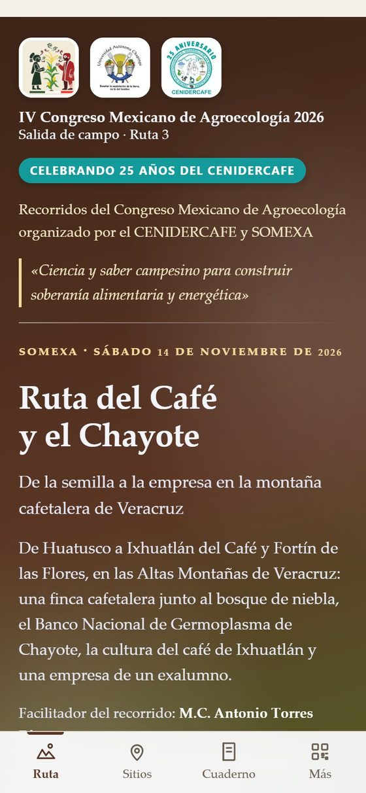
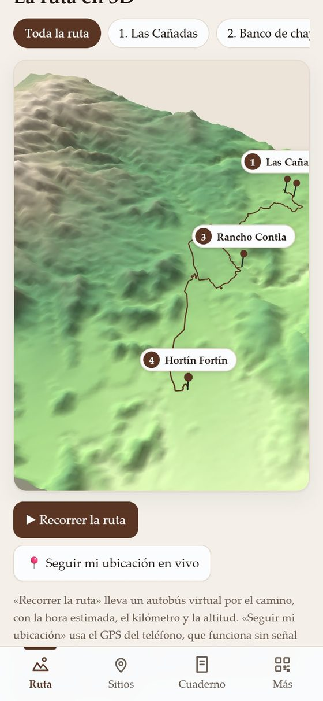
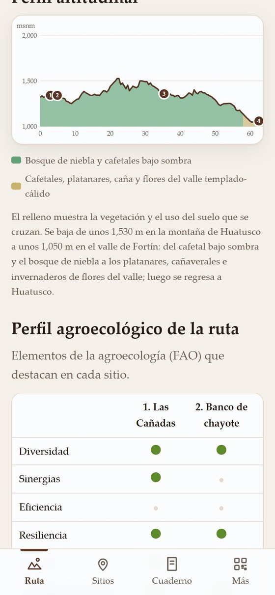
La pestaña Sitios
Lista el itinerario con horarios estimados. Cada sitio se despliega con su identidad, condiciones físico-geográficas y climograma, perfil agroecológico, qué observar, alternativas y biodiversidad, además de «Cómo llegar» con o sin señal.
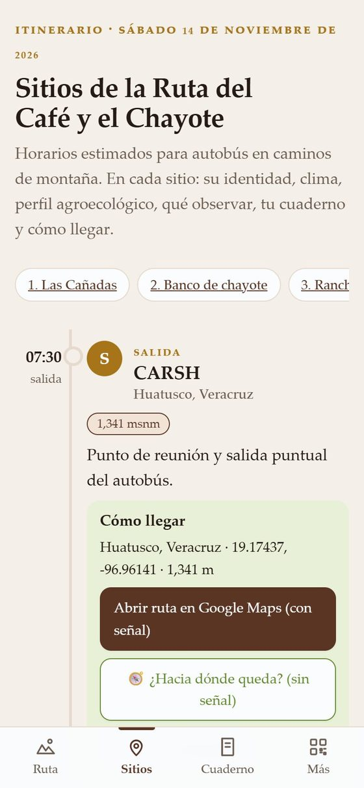
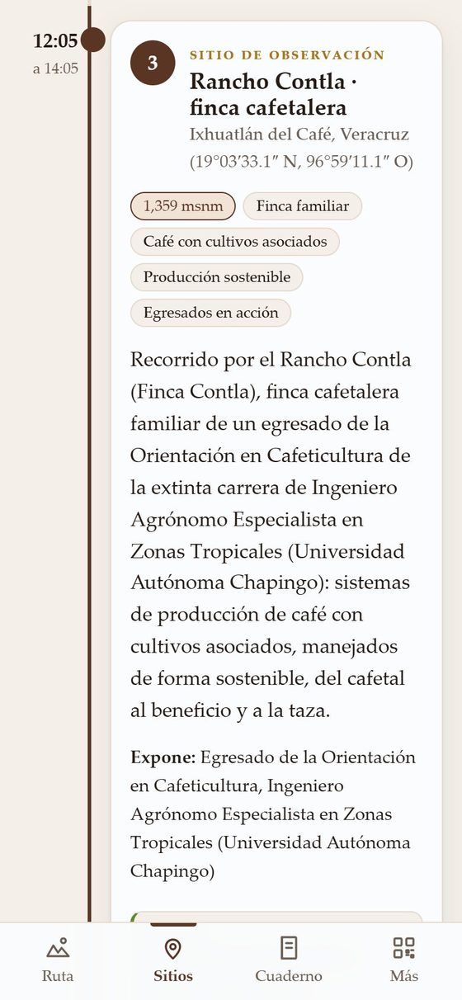
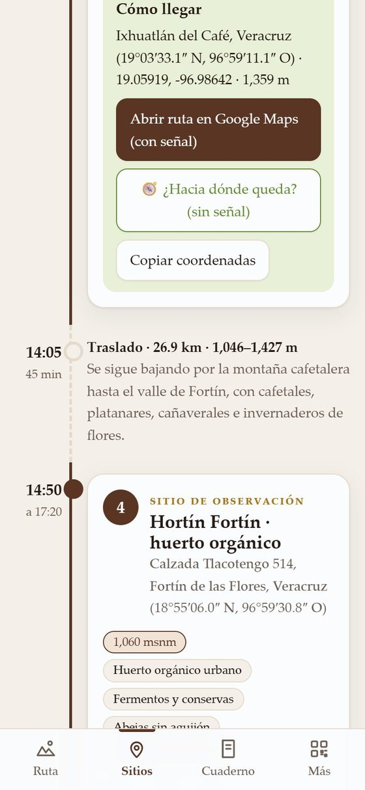
El Cuaderno y la pestaña Más
En cada sitio puedes escribir notas, tomar o elegir fotos e importar notas de Word. El Cuaderno reúne todo y lo descarga como documento de Word o como archivo .zip de fotos; «Guardar respaldo» pasa tus notas a otro teléfono. En «Más» están el código QR para compartir la guía, qué llevar, aspectos a tomar en cuenta, créditos, cómo instalarla y la familia de aplicaciones Ratio.
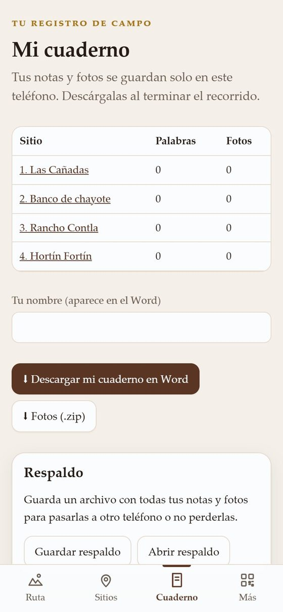
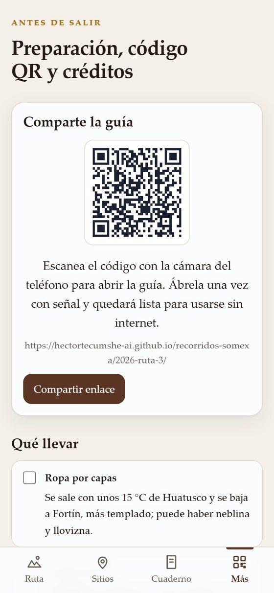
Si algo no funciona
| Problema | Qué hacer |
|---|---|
| La guía no abre sin señal | Ábrela una vez con internet y espera a que termine de cargar. Si borraste los datos del navegador, repite el paso. |
| No aparece mi ubicación | Activa la ubicación del teléfono y da permiso al navegador. Bajo techo o en barrancas el GPS tarda más. |
| El mapa en 3D va lento | Es normal en teléfonos sencillos; usa el mapa plano y el perfil, que contienen la misma información. |
| Perdí mis notas | Las notas viven en el navegador del teléfono: no las borres y descarga tu cuaderno en Word al terminar. Usa «Guardar respaldo» para pasarlas a otro teléfono. |
| Quiero compartir la guía | En «Más», usa «Compartir enlace» o muestra el código QR para que otra persona lo escanee. |
Las familias de aplicaciones
Guías de campo, viajes de estudio y la familia Ratio: libres, sin internet y con DOI.
Las guías de esta antología forman parte de una familia más amplia de aplicaciones libres, desarrolladas en la Universidad Autónoma Chapingo para la docencia, la investigación y el trabajo con productores. Todas funcionan en el navegador, pueden usarse sin internet una vez abiertas y tienen DOI para citarlas. Escanea el código QR de cada una para abrirla.
Recorridos SOMEXA
Guías de campo de los recorridos del Congreso Mexicano de Agroecología · https://hectortecumshe-ai.github.io/recorridos-somexa/
Vid, pulpa de fruta, queso jarocho y maíz criollo en Puente Nacional y Comapa.
hectortecumshe-ai.github.io/recorridos-somexa/2026-ruta-1/
DOI 10.5281/zenodo.23787066
Kiwi, arándanos, huertos agroecológicos y bosque en la sierra de Puebla.
hectortecumshe-ai.github.io/recorridos-somexa/2026-ruta-2/
DOI 10.5281/zenodo.23787064
Bosque de niebla, BANGESe, café campesino y un huerto que es empresa.
hectortecumshe-ai.github.io/recorridos-somexa/2026-ruta-3/
DOI 10.5281/zenodo.23843072
Campus CAR y ciudad de Huatusco: servicios, transporte y sitios de interés.
Viajes de Estudio Integradores · Propedéutico
Del Golfo de México al Altiplano Central · https://hectortecumshe-ai.github.io/viajes-de-estudio-propedeutico/
Nueve días por Veracruz, Puebla, Tlaxcala, el Estado de México y la Ciudad de México.
hectortecumshe-ai.github.io/viajes-de-estudio-propedeutico/2026-grupo-21/
DOI 10.5281/zenodo.23791654
Ratio Complexus
El saber local como sistema complejo adaptativo · https://hectortecumshe-ai.github.io/
El saber agrícola local como sistema complejo adaptativo: red ponderada, cladograma, regeneración, riesgos, sostenibilidad, ODS y prospectiva, de la región a la localidad.
hectortecumshe-ai.github.io/RatioTelar/
DOI 10.5281/zenodo.23429007
El conocimiento local del maíz nativo en todo México: 64 razas, un cuestionario para cada localidad y un atlas nacional.
hectortecumshe-ai.github.io/RatioMilpa/
DOI 10.5281/zenodo.23432657
El conocimiento local de la vid: clima vitícola, historial del viñedo, regeneración y riesgo; su instructivo sigue la uva de mesa de Mata de Zarza, Veracruz.
hectortecumshe-ai.github.io/RatioVina/
DOI 10.5281/zenodo.23481024
Ratio Nutritio
Dietas para animales con lo que hay en la región · https://hectortecumshe-ai.github.io/
Raciones para bovinos de carne con NASEM (2016), el clima de tu región, programa de engorda y huella ambiental.
hectortecumshe-ai.github.io/RatioBos/
DOI 10.5281/zenodo.23197134
Dietas por fase para pollo de engorda, con ajustes por altitud y calor y certificado de optimalidad.
hectortecumshe-ai.github.io/RatioAvis/
DOI 10.5281/zenodo.23123050
La primera de la familia: formular, mezclar y costear la dieta del pollo paso a paso, toda en español.
hectortecumshe-ai.github.io/FormulAves/
DOI 10.5281/zenodo.23094626
Todas las aplicaciones, instructivos y publicaciones en un solo lugar.
La resiliencia, uno de los diez elementos de la agroecología, no es resistir sin cambiar: es la capacidad de un sistema de absorber una perturbación y reorganizarse sin perder su identidad. La diversidad, las sinergias y el conocimiento compartido que verás en este recorrido son justamente lo que la sostiene, y estas herramientas ayudan a medirla y a cuidarla.
Antología de recorridos SOMEXA 2026
Monografías e información socioambiental y agroecológica de las localidades visitadas desde un enfoque de Sistemas Complejos Adaptativos en la Agroecología.
1.ª edición · noviembre de 2026 · IV Congreso Mexicano de Agroecología 2026 · «Ciencia y saber campesino para construir soberanía alimentaria y energética»
DOI 10.5281/zenodo.23845759 · En línea: https://hectortecumshe-ai.github.io/recorridos-somexa/antologia/
- Héctor Tecumshé Mojica-Zárate · ORCID 0000-0002-9067-3983
- Óscar Díaz-José
- Sergio Alejo-Bello
- José Gervasio Partida-Sedas
- José Orlando Rojas-Reyes
Centro Académico Regional Huatusco (CAR), Universidad Autónoma Chapingo, Huatusco, Veracruz, México.
Texto y figuras bajo licencia Creative Commons Atribución 4.0 Internacional (CC BY 4.0): puedes copiar, adaptar y compartir esta obra citando a sus autores. Mapas con datos de OpenStreetMap (ODbL) y relieve SRTM; clima con normales del SMN.
Cómo citar: Mojica-Zárate, H. T., Díaz-José, Ó., Alejo-Bello, S., Partida-Sedas, J. G., y Rojas-Reyes, J. O. (2026). Antología de recorridos SOMEXA 2026: monografías e información socioambiental y agroecológica de las localidades visitadas desde un enfoque de Sistemas Complejos Adaptativos en la Agroecología (1.ª ed.). Universidad Autónoma Chapingo. https://doi.org/10.5281/zenodo.23845759
Compuesta en Palatino Linotype. Generada con código abierto a partir de los datos de las guías de campo.